Show the code
install.packages("glmnet", repos = "http://cran.us.r-project.org")zsc
2018年9月13日
glmnet 包解决了一下问题（目标函数） \[
\min_{\beta_0,\beta} \frac{1}{N} \sum_{i=1}^{N} w_i l(y_i,\beta_0+\beta^T x_i) + \lambda\left[(1-\alpha)||\beta||_2^2/2 + \alpha ||\beta||_1\right],
\] #### 1.1 glmnet包安装
install.packages("glmnet", repos = "http://cran.us.r-project.org")这节介绍glmnet包中的主要函数以及它们的一般用法，对常用函数的输入参数以及输出结果做简要的说明。
以线性回归为例，来说明glmnet包的用法。
data(QuickStartExample)#x为100*20的矩阵 ,y为100 * 1的矩阵。
x = QuickStartExample$x
y = QuickStartExample$y该命令R数据存档中加载输入矩阵x和响应向量y。 x为100*20的矩阵 ,y为100 * 1的矩阵。
数据有了，我们就可以调用包中与之同名的glmnet函数来做线性回归了：
fit = glmnet(x, y)这里生成的结果 “fit”是类的对象glmnet，包含拟合模型的所有相关信息。不鼓励用户直接提取组件（像list那样提取）。推荐使用各种方法plot，print，coef和predict提取信息，这样能够使我们更优雅执行这些任务。
采用plot函数对拟合出的模型系数进行可视化：
# label = T，可以显示变量的标签。
# 参数xvar = c("norm", "lambda", "dev")
# norm（默认）: 显示系数值和L1范数之间的变化关系
# lambda： 显示系数值和对数lambda之间的变化关系
# dev : 显示系数值如何随解释偏差百分比（dev）之间的变化关系
plot(fit,label = T)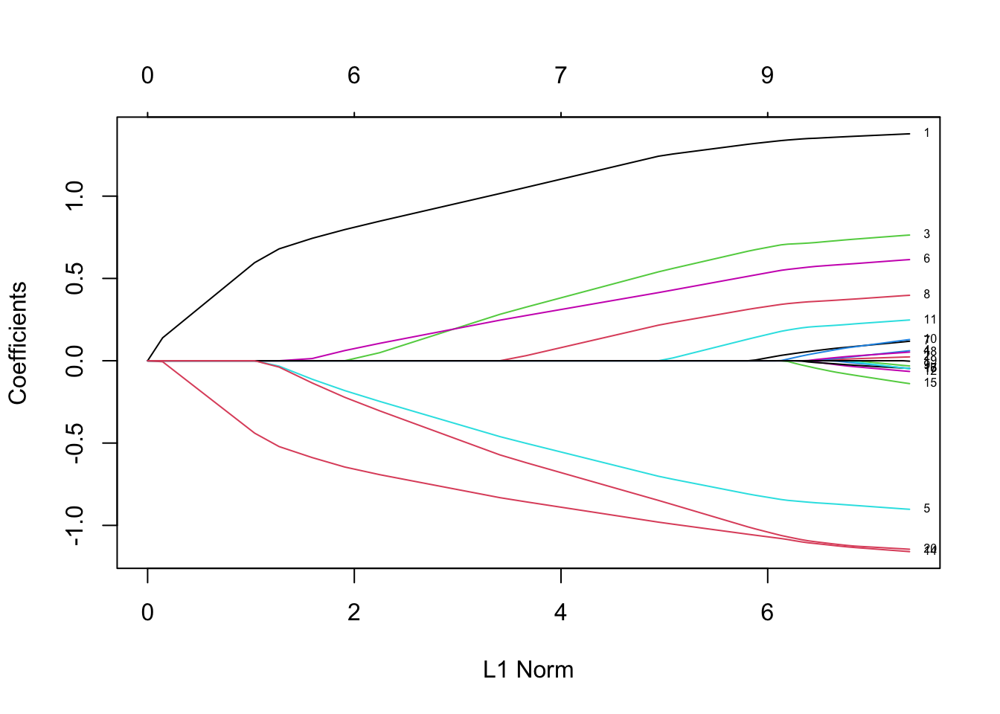
上图中，每一条曲线代表一个变量的系数。Y轴是回归系数的值，X轴是L1范数，图中上方有另一条x轴，其数值表示模型的特征数，
回到我们的拟合结果fit。作为一个 R 对象，我们可以把它当作很多函数的输入。比如说，我们可以查看详细的拟合结果：
print(fit)
#>
#> Call: glmnet(x = x, y = y)
#>
#> Df %Dev Lambda
#> 1 0 0.00 1.63100
#> 2 2 5.53 1.48600
#> 3 2 14.59 1.35400
#> 4 2 22.11 1.23400
#> 5 2 28.36 1.12400
#> 6 2 33.54 1.02400
#> 7 4 39.04 0.93320
#> 8 5 45.60 0.85030
#> 9 5 51.54 0.77470
#> 10 6 57.35 0.70590
#> 11 6 62.55 0.64320
#> 12 6 66.87 0.58610
#> 13 6 70.46 0.53400
#> 14 6 73.44 0.48660
#> 15 7 76.21 0.44330
#> 16 7 78.57 0.40400
#> 17 7 80.53 0.36810
#> 18 7 82.15 0.33540
#> 19 7 83.50 0.30560
#> 20 7 84.62 0.27840
#> 21 7 85.55 0.25370
#> 22 7 86.33 0.23120
#> 23 8 87.06 0.21060
#> 24 8 87.69 0.19190
#> 25 8 88.21 0.17490
#> 26 8 88.65 0.15930
#> 27 8 89.01 0.14520
#> 28 8 89.31 0.13230
#> 29 8 89.56 0.12050
#> 30 8 89.76 0.10980
#> 31 9 89.94 0.10010
#> 32 9 90.10 0.09117
#> 33 9 90.23 0.08307
#> 34 9 90.34 0.07569
#> 35 10 90.43 0.06897
#> 36 11 90.53 0.06284
#> 37 11 90.62 0.05726
#> 38 12 90.70 0.05217
#> 39 15 90.78 0.04754
#> 40 16 90.86 0.04331
#> 41 16 90.93 0.03947
#> 42 16 90.98 0.03596
#> 43 17 91.03 0.03277
#> 44 17 91.07 0.02985
#> 45 18 91.11 0.02720
#> 46 18 91.14 0.02479
#> 47 19 91.17 0.02258
#> 48 19 91.20 0.02058
#> 49 19 91.22 0.01875
#> 50 19 91.24 0.01708
#> 51 19 91.25 0.01557
#> 52 19 91.26 0.01418
#> 53 19 91.27 0.01292
#> 54 19 91.28 0.01178
#> 55 19 91.29 0.01073
#> 56 19 91.29 0.00978
#> 57 19 91.30 0.00891
#> 58 19 91.30 0.00812
#> 59 19 91.31 0.00739
#> 60 19 91.31 0.00674
#> 61 19 91.31 0.00614
#> 62 20 91.31 0.00559
#> 63 20 91.31 0.00510
#> 64 20 91.31 0.00464
#> 65 20 91.32 0.00423
#> 66 20 91.32 0.00386
#> 67 20 91.32 0.00351每一行代表了一个模型 ,它从左到右显示非零系数的个数（Df），模型所解释的偏差的百分比（%dev）和λ的值（Lambda） （注意岭回归中列Df的值是不会变的）
通过coef来提取模型的系数：
# 参数s：指定lambda的值，可以是一个向量，则提取多个模型的系数，每一列对应一个模型的系数
# 参数complete: 逻辑值,表示是否应该返回全系数向量.
coef(fit,s=0.1,exact=FALSE)
#> 21 x 1 sparse Matrix of class "dgCMatrix"
#> s1
#> (Intercept) 0.150928072
#> V1 1.320597195
#> V2 .
#> V3 0.675110234
#> V4 .
#> V5 -0.817411518
#> V6 0.521436671
#> V7 0.004829335
#> V8 0.319415917
#> V9 .
#> V10 .
#> V11 0.142498519
#> V12 .
#> V13 .
#> V14 -1.059978702
#> V15 .
#> V16 .
#> V17 .
#> V18 .
#> V19 .
#> V20 -1.021873704用coef来提取模型的系数,参数采用的是s 而不是lambda,—同样在predict函数中一样的道理,eg:
预测采用predict函数，参数newx用来设置输入数据，s用来设置\(\lambda\)的值：
nx = matrix(rnorm(10*20),10,20)
#predict函数与coef函数相比多了一些参数的设置，参数newx设置待预测的输入数据集，以及tpye参数选项
predict(fit,newx=nx,s=c(0.1,0.05))
#> s1 s2
#> [1,] 2.4510228 2.5445311
#> [2,] 3.7715402 3.9847592
#> [3,] 0.2998023 0.3619383
#> [4,] 0.6083807 0.5341408
#> [5,] 1.3505651 1.2295975
#> [6,] -1.4567610 -1.5414550
#> [7,] -1.8655189 -2.1116984
#> [8,] 3.2607369 3.4219932
#> [9,] 2.0913141 2.1585520
#> [10,] -1.1195637 -1.1657079glmnet提供了一系列的模型可供选择，而在大多数情况下我们需要从中挑选出一个最合适的来用就可以了。这时可以通过交叉验证的方法来筛选最优的λ值了，cv.glmnet函数实现了这一功能。 也支持绘图和预测方法。
继续沿用之前的样本数据，调用cv.glmnet函数：
cvfit = cv.glmnet(x, y)可以看到，cv.glmnet返回的结果是一个cv.glmnet类的对象，该对象的类型和glmnet函数返回的结果一样，它们本质上都是R中的list。 不鼓励直接提取信息，推荐使用各种函数提取.
我们用可视化的图形来展示cv.glmnet的结果：
plot(cvfit)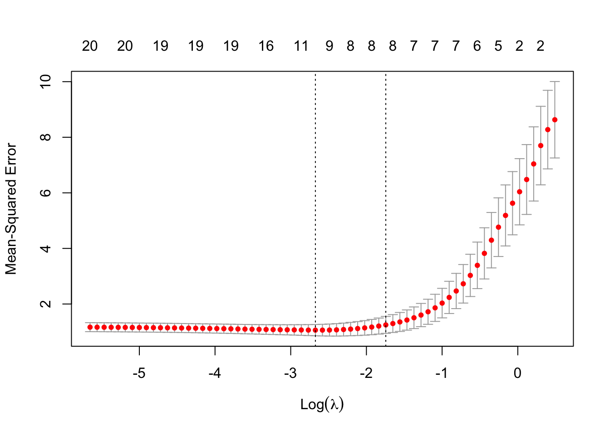
从图中可以看到MSE是如何随着lambda的不同取值而变化的。红色的散点为交叉验证的散点图，横轴为logλ，纵轴为均方误差，每个点的标准偏差上界和下界也画出来了。图的顶部字数表示非零系数的个数，第一条垂直线对应的是lambda.min的值，它是交叉验证提取出的最优值，第二条（从左往右看）是lambda.lse属性的值，它对应了距离lambda.min一个标准误差的值，并产生了一个更为正则化的模型 （lambda.1se为离最小均方误差一倍标准差的λ值。 ）
最优的λ 值可以直接采用如下命令来提取：
cvfit$lambda.min
#> [1] 0.06896889
cvfit$lambda.1se
#> [1] 0.1748613用coef函数来提取回归模型的系数：
coef(cvfit, s = "lambda.min")
#> 21 x 1 sparse Matrix of class "dgCMatrix"
#> s1
#> (Intercept) 0.147927056
#> V1 1.337393911
#> V2 .
#> V3 0.704086481
#> V4 .
#> V5 -0.842853150
#> V6 0.549403480
#> V7 0.032703914
#> V8 0.342430521
#> V9 .
#> V10 0.001206608
#> V11 0.178995989
#> V12 .
#> V13 .
#> V14 -1.079993473
#> V15 .
#> V16 .
#> V17 .
#> V18 .
#> V19 .
#> V20 -1.061382444可以看到回归模型的系数是采用稀疏矩阵的形式来存储的。由于计算出的模型系数经常是稀疏的，这时采用稀疏矩阵的方式来存储和计算更有效率。如果你不习惯稀疏矩阵的输出形式，可以用as.matrix()将其转化为传统的矩阵形式。
预测同glmnet，直接采用predict泛型函数即可：
predict(cvfit, newx = x[1:5,], s = "lambda.min")
#> lambda.min
#> [1,] -1.3626977
#> [2,] 2.5736774
#> [3,] 0.5767335
#> [4,] 2.0062604
#> [5,] 1.5410061自此，glmnet的入门介绍完了，你可以用来他做一些基本的回归模型了。
接下来，我们对glmnet包进行更为深入的介绍。
glmnet中的线性回归主要包含两类。一定是高斯簇gaussian，还有一类是多响应高斯簇mgaussian。我们依次介绍：
gaussian 是glmnet函数中的默认函数簇，它本质上是带正则项的多元线性回归的估计问题。
优化的目标函数如下：（高斯族采用的是平方损失函数） \[ \min_{(\beta_0, \beta) \in \mathbb{R}^{p+1}}\frac{1}{2N} \sum_{i=1}^N (y_i -\beta_0-x_i^T \beta)^2+\lambda \left[ \dfrac{1}{2}(1-\alpha)||\beta||_2^2 + \alpha||\beta||_1\right], \] 其中 \(\lambda \geq 0\) 是模型复杂度参数 ;\(0 \leq \alpha \leq 1\) ，当\(\alpha = 0\) 时为岭回归，当\(\alpha = 1\)为lasso，在\(0 <\alpha < 1\)则为两者的折中.
glmnet提供了很多参数可以供我们选择。下面介绍一些常用的参数设置：
alpha之前介绍过，它是弹性网的参数，取值范围是[0, 1], (且只能一个一个取，不能为向量)weights配置观测的权重。默认每个观测的权重取值均为1。nlambda默认值是100。(系统自动挑选 100 个不同的 λ 值，拟合出 100 个系数不同的模型 ）lambda一般是程序自动构建，也可以自己定义（可以是向量）。standardize表示在拟合模型前，x变量是否需要标准化。默认standardize=TRUE。更多参数设置参考帮助文档help(glmnet)。
我们用下面的例子来看看这些参数的用法： 还是用原来的样本数据，不同的是取α = 0.2（接近岭回归的正则项），设置观测的权重以及 λ序列的数量：
用print函数打印结果：
print(fit)
#>
#> Call: glmnet(x = x, y = y, weights = c(rep(1, 50), rep(2, 50)), alpha = 0.2, nlambda = 20)
#>
#> Df %Dev Lambda
#> 1 0 0.00 7.9390
#> 2 4 17.89 4.8890
#> 3 7 44.45 3.0110
#> 4 7 65.67 1.8540
#> 5 8 78.50 1.1420
#> 6 9 85.39 0.7033
#> 7 10 88.67 0.4331
#> 8 11 90.25 0.2667
#> 9 14 91.01 0.1643
#> 10 17 91.38 0.1012
#> 11 17 91.54 0.0623
#> 12 17 91.60 0.0384
#> 13 19 91.63 0.0236
#> 14 20 91.64 0.0146
#> 15 20 91.64 0.0090
#> 16 20 91.65 0.0055
#> 17 20 91.65 0.0034打印结果之前已做过说明，这里不再赘述。可以看到这里λ并没有达到预设的20。这是因为在偏差解释率达到0.999或者其变化小于10e-5时计算就会终止。而这些预设的计算终止条件可以通过glmnet.control来设置，详见help(glmnet.control)。
注意，可以设置digits选项可用于指定打印输出中的有效数字
Y轴为模型的系数值。
plot函数可以用xvar来定义X轴的度量，有三种选项：
在plot函数中添加参数label = TRUE可以显示变量的标签
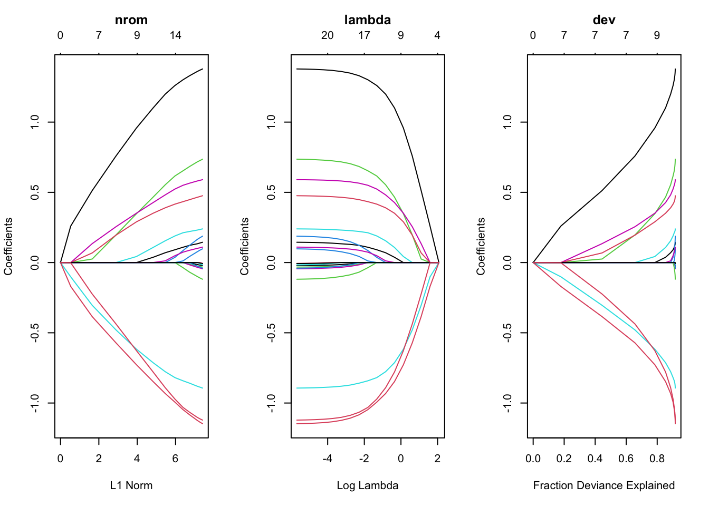
每一条曲线代表一个变量的系数。Y轴是回归系数的值，X轴是L1范数(默认)，图中上方有另一条x轴，其数值表示模型的特征数，
coef函数中最常用的两个参数为:
s 指定λ值complete 表示是否应该返回全系数向量.any(fit$lambda == 0.5)
#> [1] FALSE
coef.exact = coef(fit, s = 0.5, complete = TRUE)
coef.apprx = coef(fit, s = 0.5, complete = FALSE)
cbind2(coef.exact, coef.apprx)
#> 21 x 2 sparse Matrix of class "dgCMatrix"
#> s1 s1
#> (Intercept) 0.199098747 0.199098747
#> V1 1.174650452 1.174650452
#> V2 . .
#> V3 0.531934651 0.531934651
#> V4 . .
#> V5 -0.760959480 -0.760959480
#> V6 0.468209413 0.468209413
#> V7 0.061926756 0.061926756
#> V8 0.380301491 0.380301491
#> V9 . .
#> V10 . .
#> V11 0.143260991 0.143260991
#> V12 . .
#> V13 . .
#> V14 -0.911207368 -0.911207368
#> V15 . .
#> V16 . .
#> V17 . .
#> V18 0.009196628 0.009196628
#> V19 . .
#> V20 -0.863117051 -0.863117051结论： 当exact选取不同的参数时，提取的系数也存在一定程度的差异，但差距不大。没有特别要求的话，使用线性插值得到的结果已经够用了。
predict函数与coef函数相比多了一些参数的设置：newx是待预测的输入数据集。
type有多个选项可供选择：
s下的系数矩阵s下非0系数对应的下标predict(fit, newx = x[1:5,], type = "response", s = 0.05)
#> s1
#> [1,] -0.9802591
#> [2,] 2.2992453
#> [3,] 0.6010886
#> [4,] 2.3572668
#> [5,] 1.7520421上述命令表示在λ = 0.05时计算x头5条观测的预测值。这里的s可以是一个向量，当s是一个多数值向量时，预测值则为一个矩阵。
这小节对cv.glmnet函数的参数做简要说明：
nfolds – 交叉验证数据集划分的份数foldid – 自定义划分数据type.measure – 定义交叉验证的损失函数，“deviance”和“mse”用的是平方损失，“mae”用的是平均绝对损失举一个列子：
# 做20重交叉验证，采用平均绝对损失
cvfit <- cv.glmnet(x, y, type.measure = "mse", nfolds = 20)cv.glmnet也支持并行计算，不过要使其工作，用户必须加载doMC并注册并行数量. 在这里给出一个简单的比较示例。 (不过很遗憾，win不能用)
require(doMC) # win不能用,可以下载下来，但是不能平行计算。
# install.packages("doMC", repos="http://R-Forge.R-project.org")
registerDoMC(cores=2)
X = matrix(rnorm(1e4 * 200), 1e4, 200)
Y = rnorm(1e4)
system.time(cv.glmnet(X, Y))
#> user system elapsed
#> 0.704 0.040 0.749
system.time(cv.glmnet(X, Y, parallel = TRUE))
#> user system elapsed
#> 0.963 0.202 0.732# 看了一下帮助文档 可以改成doParallel 也不能用很奇怪
library(doParallel)
# Windows 可以使用的并行包，但在这里也不能进行并行计算，时间不变
cl<-makeCluster(6)
registerDoParallel(cl)
system.time({cvfit = cv.glmnet(x,y,parallel=TRUE)})
#> user system elapsed
#> 0.021 0.003 0.918
stopCluster(cl)# 时间也没有明显提高如上所述，并行计算可以显着加速计算过程，尤其是对于大规模问题。
函数 coef 和 predict 处理cv.glmnet 对象和处理 glmnet 对象类似。不过处理cv.glmnet对象时，在指定\(s\)参数是可以用两个特殊的字符:lambda.1se和lambda.min
cvfit$lambda.min
#> [1] 0.08307327
coef(cvfit, s = "lambda.min")
#> 21 x 1 sparse Matrix of class "dgCMatrix"
#> s1
#> (Intercept) 0.14936467
#> V1 1.32975267
#> V2 .
#> V3 0.69096092
#> V4 .
#> V5 -0.83122558
#> V6 0.53669611
#> V7 0.02005438
#> V8 0.33193760
#> V9 .
#> V10 .
#> V11 0.16239419
#> V12 .
#> V13 .
#> V14 -1.07081121
#> V15 .
#> V16 .
#> V17 .
#> V18 .
#> V19 .
#> V20 -1.04340741
predict(cvfit, newx = x[1:5,], s = "lambda.min")
#> lambda.min
#> [1,] -1.3647490
#> [2,] 2.5686013
#> [3,] 0.5705879
#> [4,] 1.9682289
#> [5,] 1.4964211除了可以设置nfolds来寻找合适的模型外，我们还可以通过foldid设置相同的数据划分来选择最优的α值。
进行对比
par(mfrow=c(2,2))
plot(cv1);plot(cv.5);plot(cv0)
plot(log(cv1$lambda),cv1$cvm,pch=19,col="red",xlab="log(Lambda)",ylab=cv1$name)
points(log(cv.5$lambda),cv.5$cvm,pch=19,col="grey")
points(log(cv0$lambda),cv0$cvm,pch=19,col="blue")
legend("topleft",legend=c("alpha= 1","alpha= .5","alpha 0"),pch=19,col=c("red","grey","blue"))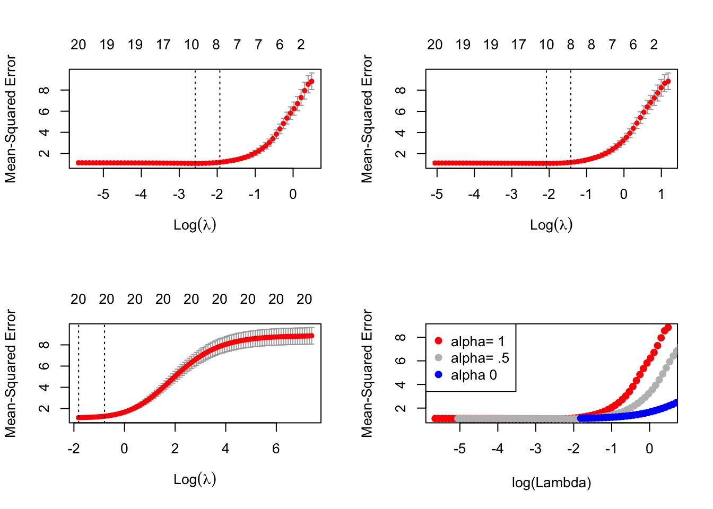
我们可以看到这里选择lasso(alpha=1)时，模型的均方误差最小。
这些是最近添加的功能，可以增强模型的范围。假设我们想要拟合我们的模型，但是要将系数限制为大于-0.7且小于0.5。这可以通过upper.limits和lower.limits参数轻松实现：
这些是相当随意的限制; 通常我们希望系数为正，所以我们只能设置lower.limit为0
注意,上下限的取值范围 ：upper.limits的值不能小于0，lower.limits的值不能大于0 ,另外，如果想对每一个变量的系数对不同的限定，需要将这里的单点值即标量改为向量的形式就可以了。
这个参数可以给每一个系数提供一个单独的惩罚因子。该惩罚因子默认是1，它也支持自定义。如果将惩罚因子全部设置成为0的话，相当于就没有惩罚项了。
看看以下公式就一目了然了： \[ \lambda \sum_{j=1}^p \boldsymbol{v_j} P_\alpha(\beta_j) = \lambda \sum_{j=1}^p \boldsymbol{v_j} \left[ (1-\alpha)\frac{1}{2} \beta_j^2 + \alpha |\beta_j| \right]. \] 这个参数设置选项很有用，假如我们知道了一些先验信息，知道了其中一些变量很重要，需要在建模正则化的同时一直保留这些变量，那么可以把这些变量对应系数的惩罚因子设置为0。
同样用之前的数据，我们把第5、10、15个变量对应的惩罚因子设置为0：
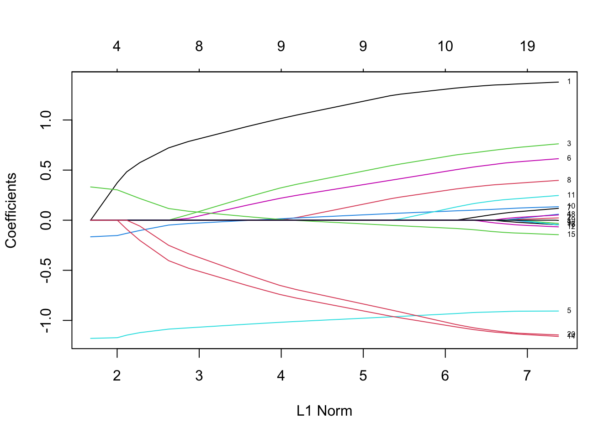
从上图中可以看到，变量5、10、15对应的系数一直都在模型中。
还有一些其它的有用的参数，比如，exclude参数可以用来限制指定的变量入选模型；intercept参数可以用来设定模型是否含有截距项等等。更多设置参考帮助文档help(cv.glmnet).
有时，特别是当变量数量很少时，我们希望将变量标签添加到绘图中，而不是用变量的所在数据集中的下标。 如下：简单生成一组数据，拟合一个glmnet模型 ，并画出图
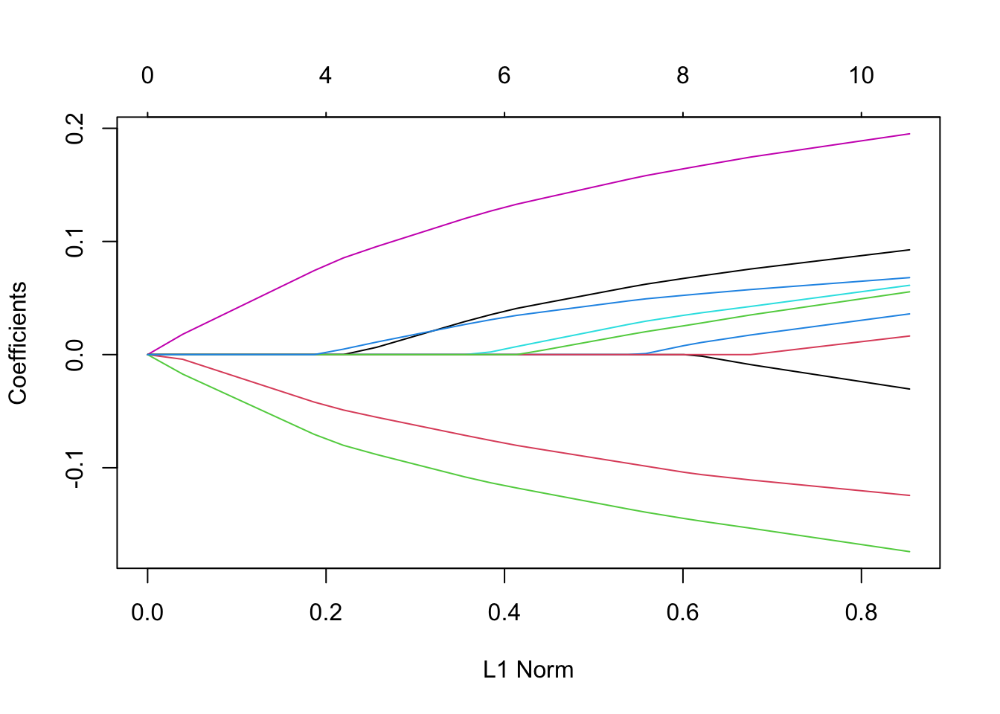
然而我们想要的是用变量名称标记曲线 ，如下：
多响应高斯簇模型的估计需要在glmnet函数中设置family = "mgaussian"。与以上单变量响应模型类似，它只是响应变量增多了，我们通常称之为“多任务学习”问题。虽然响应变量增多了，但是建模时所选择的自变量是完全一样的，只是待估系数不同而已。
很显然，模型的因变量不再是一个向量形式，而是一个二维矩阵，这时估计出的系数也会是一个矩阵，先看看多响应高斯簇模型解决的问题： \[ \min_{(\beta_0, \beta) \in \mathbb{R}^{(p+1)\times K}}\frac{1}{2N} \sum_{i=1}^N ||y_i -\beta_0-\beta^T x_i||^2_F+\lambda \left[ (1-\alpha)||\beta||_F^2/2 + \alpha\sum_{j=1}^p||\beta_j||_2\right]. \] 这里的βj是\(p\times K\)维的系数矩阵\(\beta\)的第j行。
data(MultiGaussianExample)# 产生x,y两个矩阵，x的维度100*20 ,y的维度100 * 4。
x = MultiGaussianExample$x
y = MultiGaussianExample$ymfit = glmnet(x, y, family = "mgaussian")多响应高斯模型与单响应高斯模型的大部分参数设置相同，如alpha,weights,nlambda,standardize。但是mgaussian簇有一个额外的参数standardize.response，它可以用来给响应变量做标准化，默认为FALSE。
用plot函数查看系数的变化：
plot(mfit, xvar = "lambda", label = TRUE, type.coef = "2norm")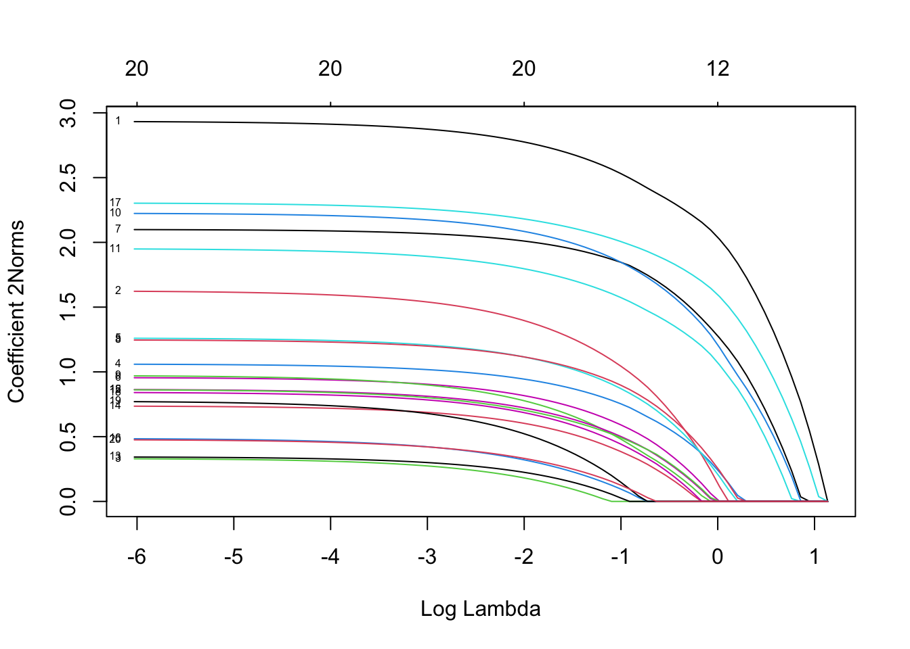
plot(mfit, xvar = "lambda", label = TRUE, type.coef = "coef")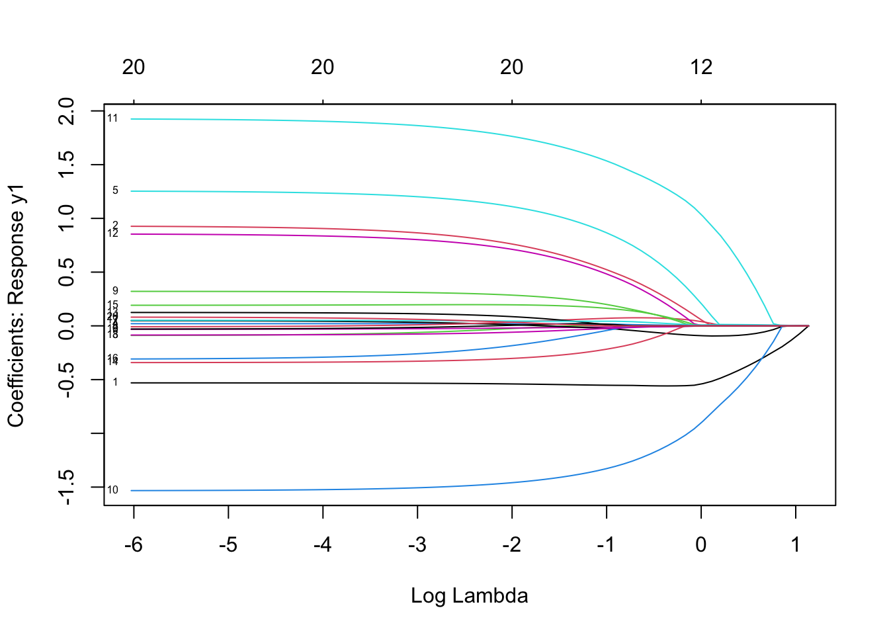
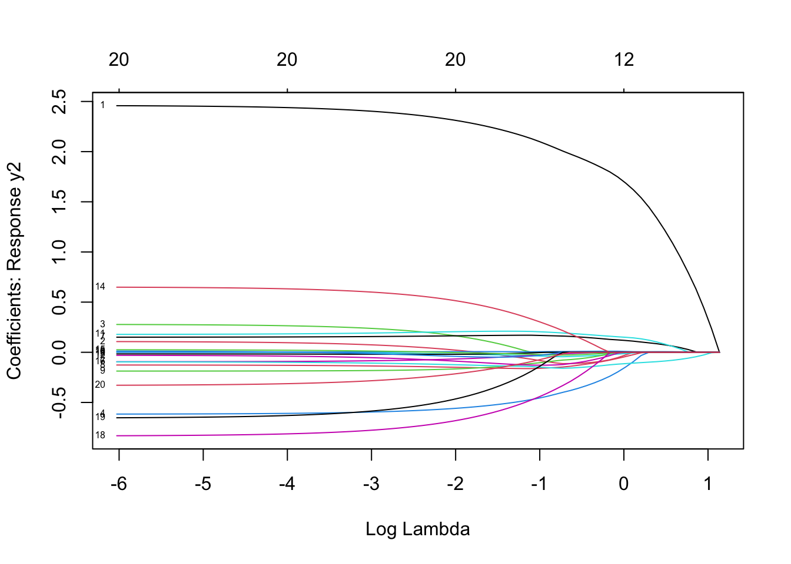
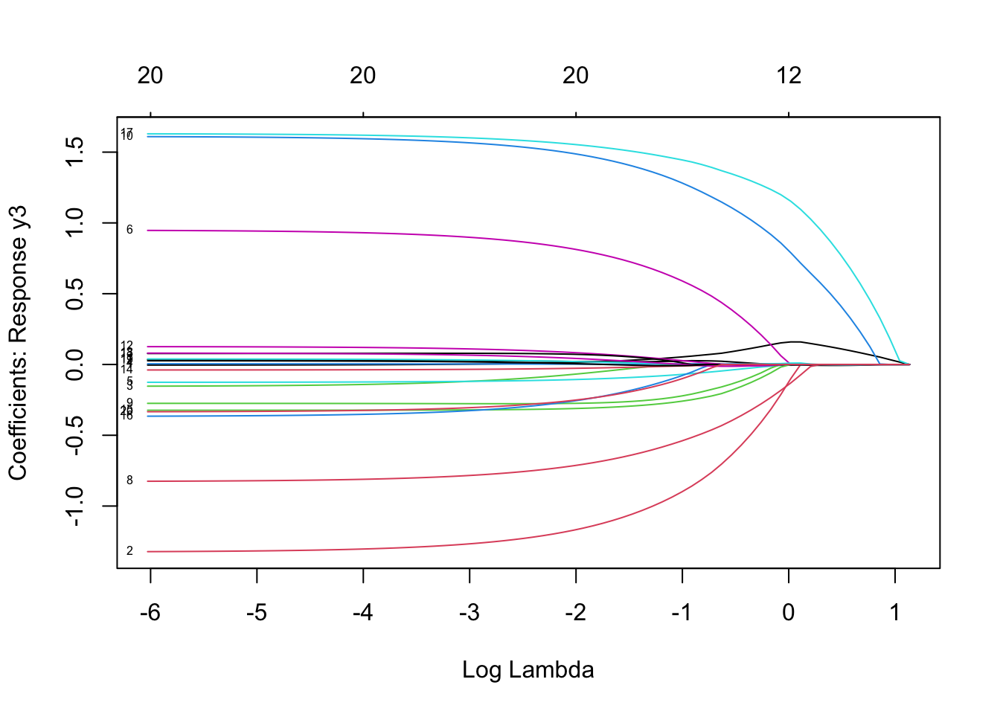
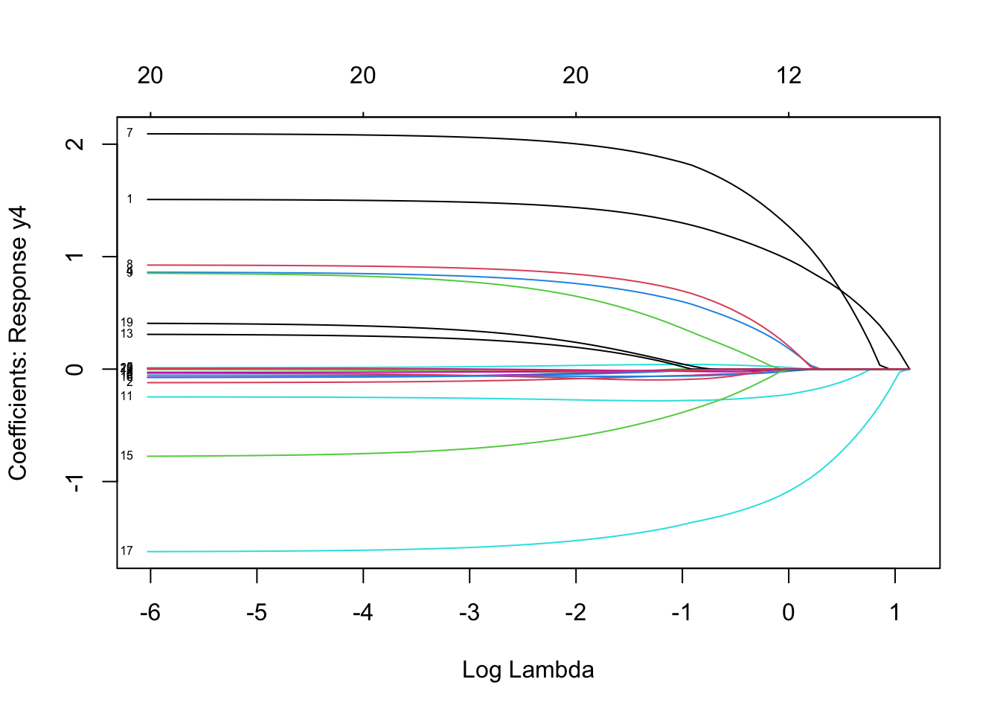
其中xvar并且label两个参数的设置与单响应的高斯模型一样 。这里的type.coef = "2norm"表示每个变量的系数以二范数的形式展现。默认设置为type.coef = "coef"，这时每个响应变量会展示一张系数变化的图。
可以通过coef函数提取系数 ，predict函数进行预测。用法和但响应的高斯模型一样，下面看看predict的用法：
predict(mfit, newx = x[1:5,], s = c(0.1, 0.01))
#> , , 1
#>
#> y1 y2 y3 y4
#> [1,] -4.7106263 -1.1634574 0.6027634 3.740989
#> [2,] 4.1301735 -3.0507968 -1.2122630 4.970141
#> [3,] 3.1595229 -0.5759621 0.2607981 2.053976
#> [4,] 0.6459242 2.1205605 -0.2252050 3.146286
#> [5,] -1.1791890 0.1056262 -7.3352965 3.248370
#>
#> , , 2
#>
#> y1 y2 y3 y4
#> [1,] -4.6415158 -1.2290282 0.6118289 3.779521
#> [2,] 4.4712843 -3.2529658 -1.2572583 5.266039
#> [3,] 3.4735228 -0.6929231 0.4684037 2.055574
#> [4,] 0.7353311 2.2965083 -0.2190297 2.989371
#> [5,] -1.2759930 0.2892536 -7.8259206 3.205211同样的交叉验证用cv.glmnet函数：
cvmfit = cv.glmnet(x, y, family = "mgaussian")画出交叉验证的结果：
plot(cvmfit)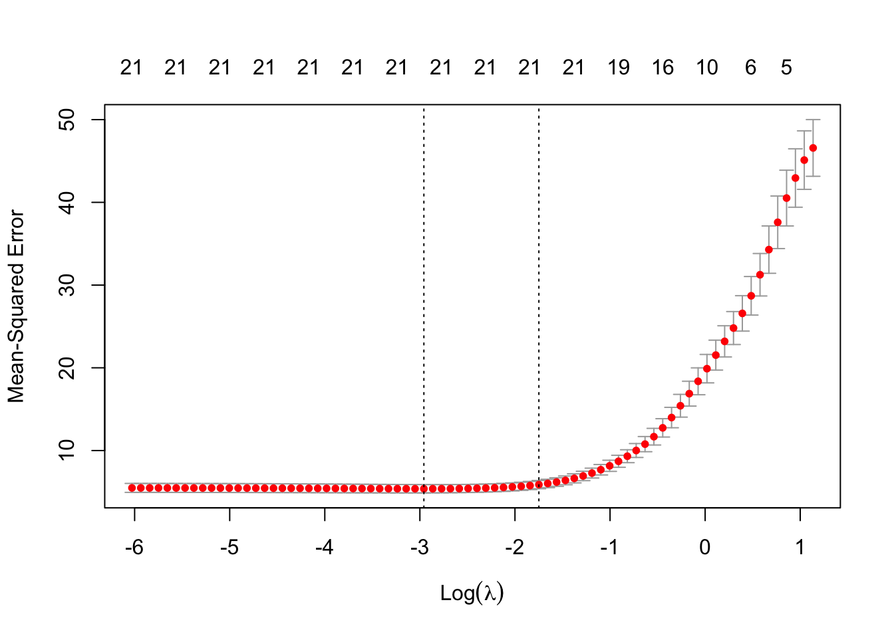
想要查看最优的\(\lambda\),,采用如下命令:
cvmfit$lambda.min
#> [1] 0.05193158
cvmfit$lambda.1se
#> [1] 0.174054和以前一样，第一个是达到最小均方误差的值，第二个是最正则化模型，其均方误差在最小值的一个标准误差范围内
逻辑回归是分类问题中最常用的模型之一。如果是一个二分类问题，一般假定响应变量服从二项分布，如果是多分类问题，则假定服从多项式分布。
假定响应变量的取值为 \(\mathcal{G}=\{1,2\}\).定义 \(y_i = I(g_i=1)\).则有
\[ \mbox{Pr}(G=2|X=x)+\frac{e^{\beta_0+\beta^Tx}}{1+e^{\beta_0+\beta^Tx}} \] 我们可以两边取对数，改写为如下形式（称为对数似然函数）：
\[ \log\frac{\mbox{Pr}(G=2|X=x)}{\mbox{Pr}(G=1|X=x)}=\beta_0+\beta^Tx \]
这个带惩罚逻辑回归的目标函数的对数似然如下： \[ \min_{(\beta_0, \beta) \in \mathbb{R}^{p+1}} -\left[\frac{1}{N} \sum_{i=1}^N y_i \cdot (\beta_0 + x_i^T \beta) - \log (1+e^{(\beta_0+x_i^T \beta)})\right] + \lambda \big[ (1-\alpha)||\beta||_2^2/2 + \alpha||\beta||_1\big]. \] 当 \(p > N\) 时，逻辑回归常常伴随着退化的困扰 ，当\(N\)接近\(p\)时，甚至在表现出野蛮的行为 。弹性网惩罚缓解了这些问题。
data(BinomialExample)# 产生名为x维度为100*30的矩阵 ,名为y长度为100的int向量（0、1向量）
x = BinomialExample$x
y = BinomialExample$y这里的输入x与其他分布簇相同，对于二项Logistic回归，响应变量y应该是具有两个级别的因子，或者是计数或比例的两列矩阵
glmnet二项式回归的其他可选参数与高斯族的几乎相同.仅需要把函数簇改为family = "binomial"即可：
fit = glmnet(x, y, family = "binomial")同样， 我们可以用print和plot函数去查看对象 , 用coef提取特定λ的系数，用predict可以做出预测 .
plot(fit, xvar = "dev", label = TRUE)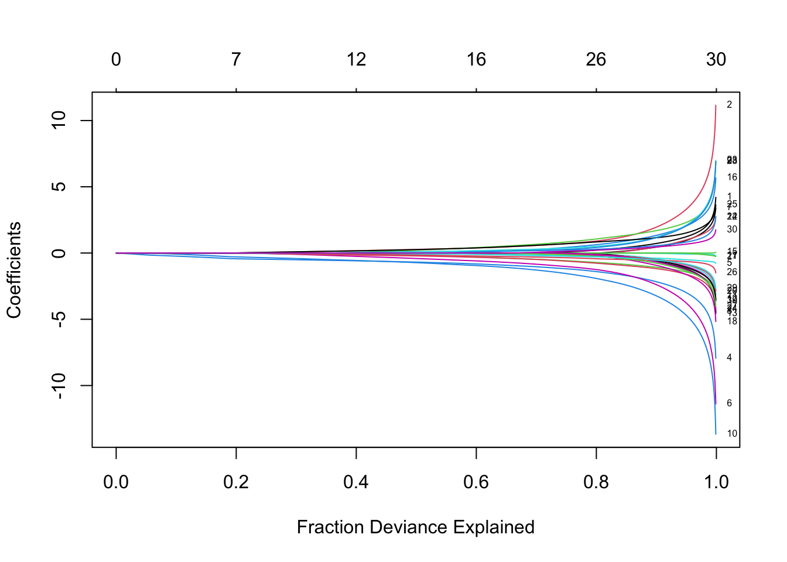
逻辑回归的预测同高斯簇函数的用法有点不同，主要体现在参数type的设置上，详细概括如下：
s下的系数的估计值s对应非零系数的索引对于“二项式”模型，预测结果仅仅是针对响应变量的第二个水平(“link”, “response”, “coefficients”, “nonzero”) (可以用
level函数查看第二级别的类)
逻辑回归的cv.glmnet的用法同高斯簇函数，nfolds, weights, lambda,parallel的设置一样，区别主要在type.measure：
例如，用误分类率误差为标准做十折交叉验证，代码如下：
cvfit = cv.glmnet(x, y, family = "binomial", type.measure = "class")用plot查看cv.glmnet生成的结果： .
plot(cvfit)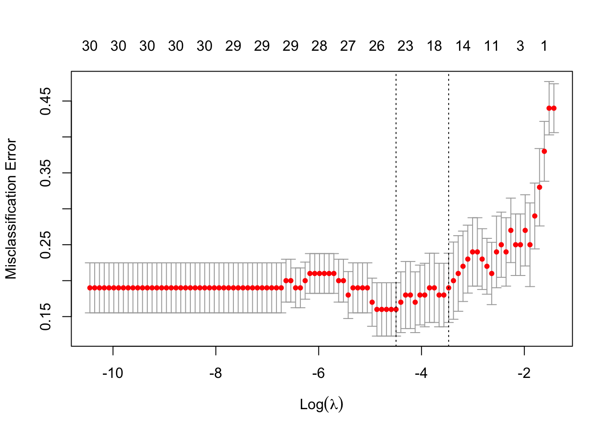
cvfit$lambda.min #查看最优的λ值
#> [1] 0.01116192
cvfit$lambda.1se
#> [1] 0.0310587coef和predict与高斯簇类似：
coef(cvfit, s = "lambda.min") # 如前所述，此处返回的结果仅适用于响应变量的第二个水平。
#> 31 x 1 sparse Matrix of class "dgCMatrix"
#> s1
#> (Intercept) 0.219571057
#> V1 0.127143184
#> V2 0.773438291
#> V3 -0.622026677
#> V4 -1.249153390
#> V5 -0.236036348
#> V6 -1.086126631
#> V7 .
#> V8 -0.662605660
#> V9 0.903895121
#> V10 -1.662994099
#> V11 -0.069429691
#> V12 -0.109197705
#> V13 .
#> V14 .
#> V15 .
#> V16 0.489302061
#> V17 .
#> V18 -0.123121403
#> V19 -0.009732698
#> V20 -0.063913565
#> V21 .
#> V22 0.237278301
#> V23 0.413516340
#> V24 -0.040687440
#> V25 0.746129317
#> V26 -0.376173275
#> V27 -0.168082915
#> V28 0.312045066
#> V29 -0.254478998
#> V30 0.157077463As mentioned previously, the results returned here are only for the second level of the factor response.
predict(cvfit, newx = x[1:10,], s = "lambda.min", type = "class")
#> lambda.min
#> [1,] "0"
#> [2,] "1"
#> [3,] "1"
#> [4,] "0"
#> [5,] "1"
#> [6,] "0"
#> [7,] "0"
#> [8,] "0"
#> [9,] "1"
#> [10,] "1"多分类逻辑回归假定响应变量服从多项式分布, 假定响应变量有K个水平 \({\cal G}=\{1,2,\ldots,K\}\)。则有
\[ \mbox{Pr}(G=k|X=x)=\frac{e^{\beta_{0k}+\beta_k^Tx}}{\sum_{\ell=1}^Ke^{\beta_{0\ell}+\beta_\ell^Tx}}. \]
\({Y}\) 应该是 \(N \times K\) 的响应矩阵（把离散变量进行one-hot编码即可） ,那么带弹性网惩罚项的非负对数似然函数如下： \[ \ell(\{\beta_{0k},\beta_{k}\}_1^K) = -\left[\frac{1}{N} \sum_{i=1}^N \Big(\sum_{k=1}^Ky_{il} (\beta_{0k} + x_i^T \beta_k)- \log \big(\sum_{k=1}^K e^{\beta_{0k}+x_i^T \beta_k}\big)\Big)\right] +\lambda \left[ (1-\alpha)||\beta||_F^2/2 + \alpha\sum_{j=1}^p||\beta_j||_q\right]. \] 这里β是一个\(p\times K\)维的系数矩阵 \(\beta_k\) 是其中的第\(k\)列,表示第\(k\)个模型对应模型的系数 , \(\beta_j\) 第\(j\)行，表示第\(j\)个变量前面的系数。
后面的惩罚项 \(||\beta_j||_q\), 有两种情形 \(q\in \{1,2\}\).当q=1时，它是一个lasso惩罚项；当q=2时，它是一个grouped-lasso惩罚项。
首先载入数据集：
data(MultinomialExample)# 产生名为x维度为100*30的矩阵 ,名为y长度为100的数字向量（水平1,2,3组成）训练是内部自动转换
x = MultinomialExample$x
y = MultinomialExample$y多分类逻辑回归的模型拟和二分类逻辑回归类似，只是这里新增加了一个特殊的参数type.multinomial，当type.multinomial = "grouped"时，模型拟合时会让每个变量前面的系数全为0或者全不为零，其实就是对于每个类建立逻辑回归时所用到的变量完全相同。
fit = glmnet(x, y, family = "multinomial", type.multinomial = "grouped")用plot查看模型拟合结果：
plot(fit, xvar = "lambda", label = TRUE, type.coef = "2norm")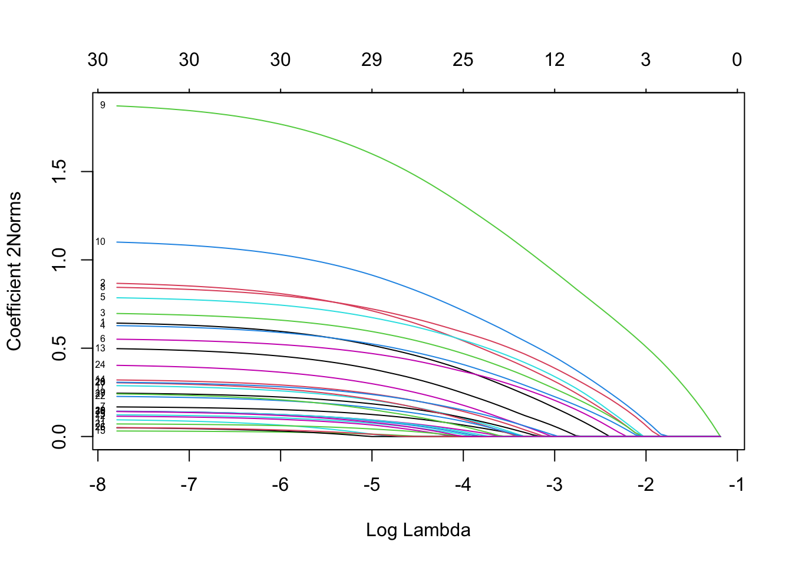
plot(fit, xvar = "lambda", label = TRUE, type.coef = "coef")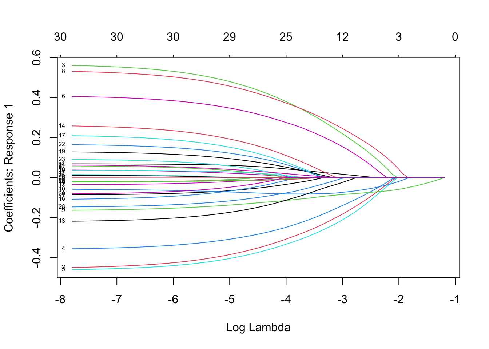
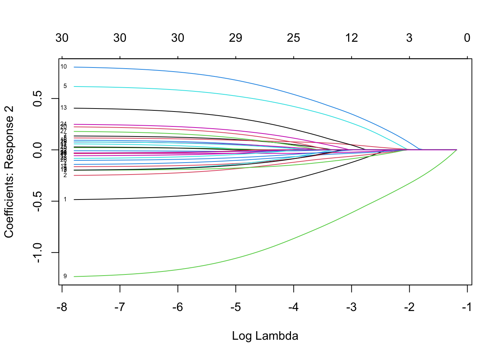
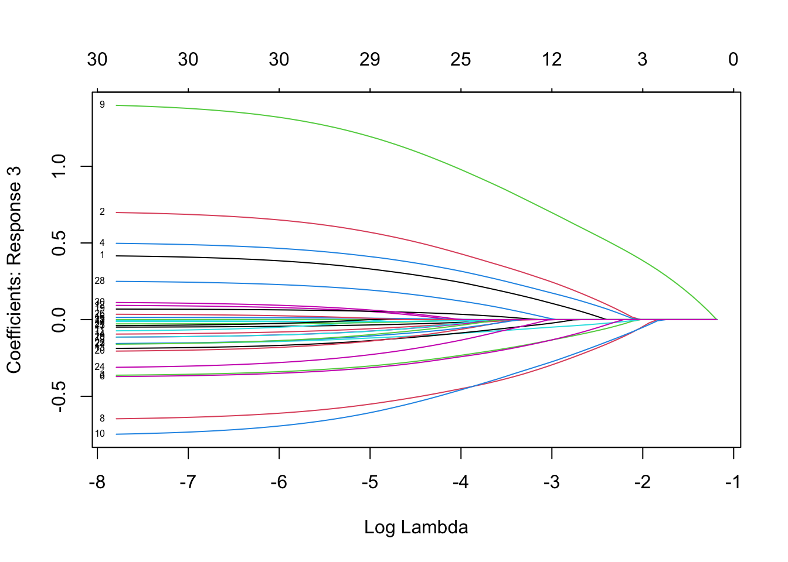
这里xvar和label的使用和之前相同，但是多了一个type.coef选项，这个选项仅适用于对多分类逻辑回归以及多响应变量线性回归，若type.coef = "coef"会用多张图分别展示每个响应变量的系数，若type.coef = "2norm"则会展示系数的L2-范数。
我们同样也可以做交叉验证：
library(doParallel)
# Windows System
cl<-makeCluster(7)
registerDoParallel(cl)
cvfit=cv.glmnet(x, y, family="multinomial", type.multinomial = "grouped", parallel = TRUE)
stopCluster(cl)
plot(cvfit)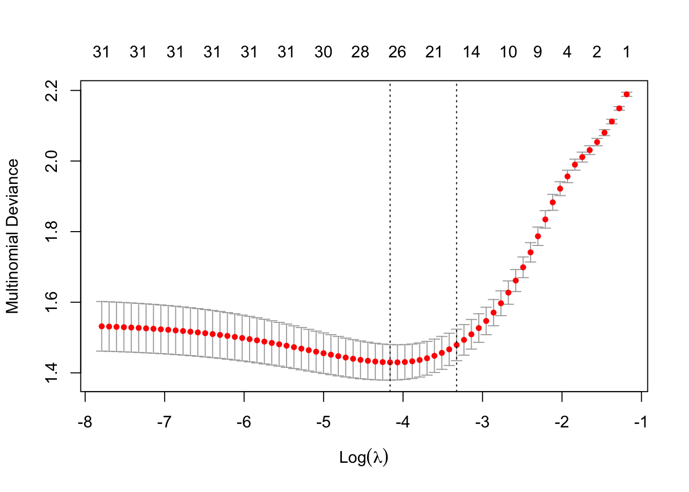
用拟合的模型来预测：
predict(cvfit, newx = x[1:10,], s = "lambda.min", type = "class")
#> 1
#> [1,] "3"
#> [2,] "2"
#> [3,] "2"
#> [4,] "3"
#> [5,] "1"
#> [6,] "3"
#> [7,] "3"
#> [8,] "1"
#> [9,] "1"
#> [10,] "2"泊松回归经常会用到计数模型中，假定其误差满足泊松分布。
经常用其均值的对数来建模：\(\log \mu(x) = \beta_0+\beta' x\).
给定 \(\{x_i,y_i\}_1^N\)下的对数似然为: \[ l(\beta|X, Y) = \sum_{i=1}^N (y_i (\beta_0+\beta' x_i) - e^{\beta_0+\beta^Tx_i}. \] 于是问题变成优化如下带惩罚的对数似然： \[ \min_{\beta_0,\beta} -\frac1N l(\beta|X, Y) + \lambda \left((1-\alpha) \sum_{i=1}^N \beta_i^2/2) +\alpha \sum_{i=1}^N |\beta_i|\right). \]
data(PoissonExample)# 产生名为x维度为500*20的矩阵 ,名为y长度为500的数字向量,全是大于0的数字（泊松函数也是大于0的函数）
x = PoissonExample$x
y = PoissonExample$y采用glmnet函数，设置family = "poisson"：
fit = glmnet(x, y, family = "poisson")plot(fit)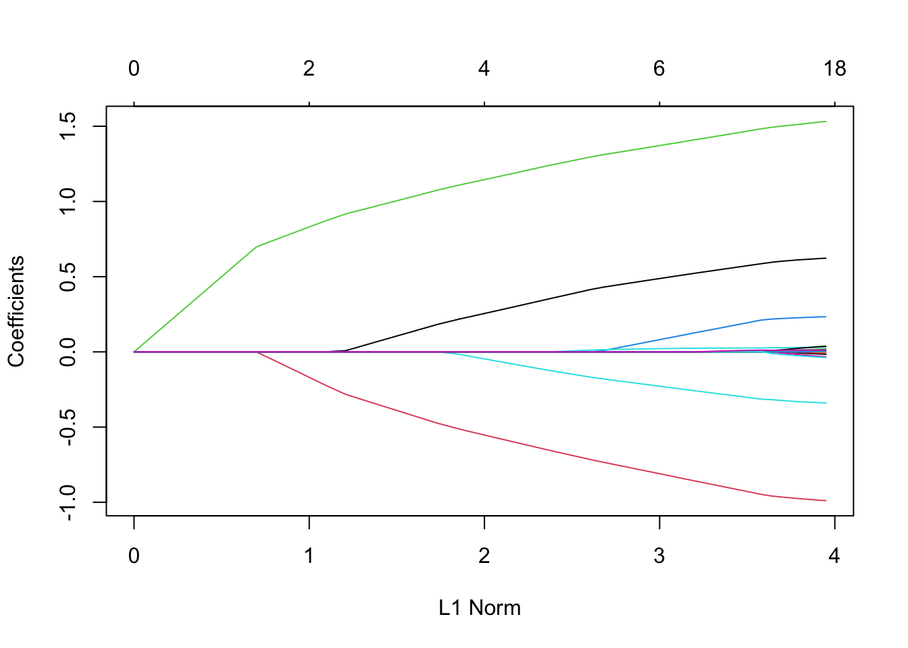
用predict做预测,在参数选项的设置中，主要是type存在一些差异，做出说明如下：
s下的系数，也可以直接用coef函数s对应非零系数的索引coef(fit, s = 1)
#> 21 x 1 sparse Matrix of class "dgCMatrix"
#> s1
#> (Intercept) 0.61123371
#> V1 0.45819758
#> V2 -0.77060709
#> V3 1.34015128
#> V4 0.04350500
#> V5 -0.20325967
#> V6 .
#> V7 .
#> V8 .
#> V9 .
#> V10 .
#> V11 .
#> V12 0.01816309
#> V13 .
#> V14 .
#> V15 .
#> V16 .
#> V17 .
#> V18 .
#> V19 .
#> V20 .
predict(fit, newx = x[1:5,], type = "response", s = c(0.1,1))
#> s1 s2
#> [1,] 2.4944232 4.4263365
#> [2,] 10.3513120 11.0586174
#> [3,] 0.1179704 0.1781626
#> [4,] 0.9713412 1.6828778
#> [5,] 1.1133472 1.9934537我们同样也可以做交叉验证：
cvfit = cv.glmnet(x, y, family = "poisson")选项与高斯族几乎相同，除了 type.measure
cv.glmnet中type.measure的设置：
绘制cv.glmnet对象。
plot(cvfit)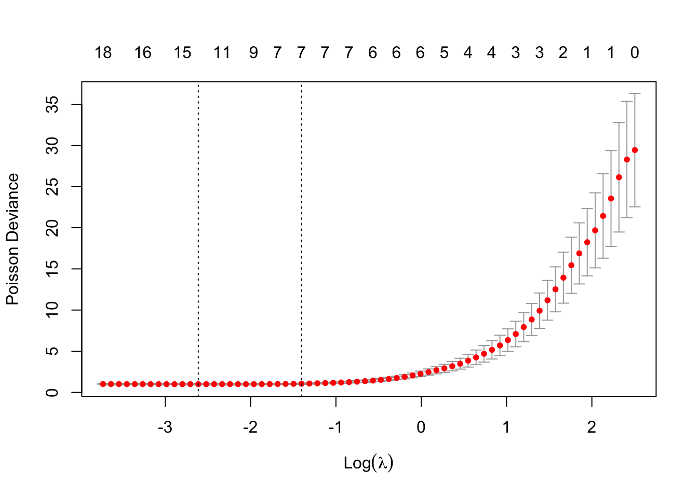
提取最优λ对应的模型系数：
opt.lam = c(cvfit$lambda.min, cvfit$lambda.1se)
coef(cvfit, s = opt.lam)
#> 21 x 2 sparse Matrix of class "dgCMatrix"
#> s1 s2
#> (Intercept) 0.070584044 0.200007600
#> V1 0.609229006 0.571833738
#> V2 -0.972486782 -0.927099773
#> V3 1.509004735 1.466409190
#> V4 0.225598648 0.192138902
#> V5 -0.328715117 -0.301559295
#> V6 . .
#> V7 -0.005088443 .
#> V8 . .
#> V9 . .
#> V10 0.006071219 .
#> V11 . .
#> V12 0.029070537 0.025801372
#> V13 -0.014882186 .
#> V14 0.020864442 .
#> V15 . .
#> V16 0.008606587 .
#> V17 . .
#> V18 . .
#> V19 -0.023621751 .
#> V20 0.011789503 0.009436612可以使用predict进行预测，方法类似，在重复
不是很了解。
The Cox proportional hazards model is commonly used for the study of the relationship beteween predictor variables and survival time. In the usual survival analysis framework, we have data of the form \((y_1, x_1, \delta_1), \ldots, (y_n, x_n, \delta_n)\) where \(y_i\), the observed time, is a time of failure if \(\delta_i\) is 1 or right-censoring if \(\delta_i\) is 0. We also let \(t_1 < t_2 < \ldots < t_m\) be the increasing list of unique failure times, and \(j(i)\) denote the index of the observation failing at time \(t_i\).
The Cox model assumes a semi-parametric form for the hazard \[ h_i(t) = h_0(t) e^{x_i^T \beta}, \] where \(h_i(t)\) is the hazard for patient \(i\) at time \(t\), \(h_0(t)\) is a shared baseline hazard, and \(\beta\) is a fixed, length \(p\) vector. In the classic setting \(n \geq p\), inference is made via the partial likelihood \[ L(\beta) = \prod_{i=1}^m \frac{e^{x_{j(i)}^T \beta}}{\sum_{j \in R_i} e^{x_j^T \beta}}, \] where \(R_i\) is the set of indices \(j\) with \(y_j \geq t_i\) (those at risk at time \(t_i\)).
Note there is no intercept in the Cox mode (its built into the baseline hazard, and like it, would cancel in the partial likelihood.)
We penalize the negative log of the partial likelihood, just like the other models, with an elastic-net penalty.
同样地，我们加载预先生成好的样本数据和响应变量，但是这里需要注意的是，这里采用了生存分析的分析框架，输入数据略有差别。首先，我们加载数据集：
data(CoxExample)# 产生名为x的矩阵，其维度为1000*30 ，名为y的矩阵，其维度为1000*2
x = CoxExample$x
y = CoxExample$y
y[1:5,] # status列表示time列对应下的状态，第一列必须是数值型的时间，第二列参数是逻辑向量，0/1表示死亡与否
#> time status
#> [1,] 1.76877757 1
#> [2,] 0.54528404 1
#> [3,] 0.04485918 0
#> [4,] 0.85032298 0
#> [5,] 0.61488426 1可以看到加载的数据还是包含自变量x以及响应变量y两部分：x是n×p维的矩阵；不同的是y，y为\(n \times 1\)维的矩阵，其中名为time的列是观察时间，名为status的列为该观察时间下对应的状态，0表示生成，1表示死亡。
同样用glmnet建模:
fit = glmnet(x, y, family = "cox")plot(fit)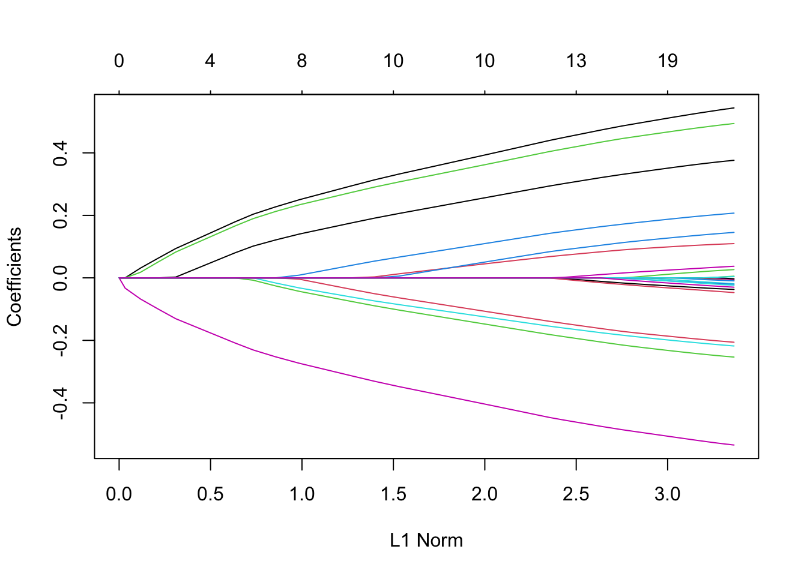
提取给定 \(\lambda\)下对应的系数：
coef(fit, s = 0.05)
#> 30 x 1 sparse Matrix of class "dgCMatrix"
#> 1
#> V1 0.37693638
#> V2 -0.09547797
#> V3 -0.13595972
#> V4 0.09814146
#> V5 -0.11437545
#> V6 -0.38898545
#> V7 0.24291400
#> V8 0.03647596
#> V9 0.34739813
#> V10 0.03865115
#> V11 .
#> V12 .
#> V13 .
#> V14 .
#> V15 .
#> V16 .
#> V17 .
#> V18 .
#> V19 .
#> V20 .
#> V21 .
#> V22 .
#> V23 .
#> V24 .
#> V25 .
#> V26 .
#> V27 .
#> V28 .
#> V29 .
#> V30 .由于Cox模型不常用于预测，所以没有给出预测的样例 。如果需要，可以参考帮助文件help(predict.glmnet)。
用cv.glmnet做K折交叉验证时，type.measure的选项仅支持“deviance”：
cvfit = cv.glmnet(x, y, family = "cox")plot(cvfit)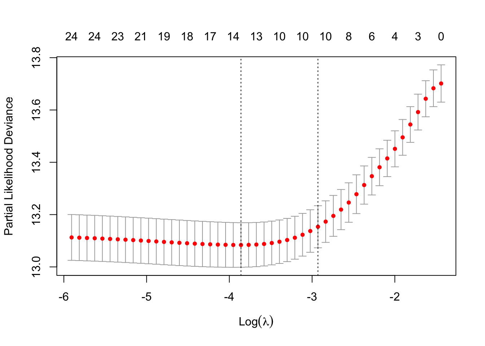
提取最优的 \(\lambda\) 值
cvfit$lambda.min
#> [1] 0.02107668
cvfit$lambda.1se
#> [1] 0.05343706提取模型系数：
index.min
#> [1] 0.47296769 -0.16213158 -0.20518470 0.16374470 -0.17544445 -0.47500198
#> [7] 0.32076305 0.08339592 0.43422644 0.10423130 0.01054257 -0.01125802
#> [13] -0.01541834
coef.min
#> 30 x 1 sparse Matrix of class "dgCMatrix"
#> 1
#> V1 0.47296769
#> V2 -0.16213158
#> V3 -0.20518470
#> V4 0.16374470
#> V5 -0.17544445
#> V6 -0.47500198
#> V7 0.32076305
#> V8 0.08339592
#> V9 0.43422644
#> V10 0.10423130
#> V11 .
#> V12 .
#> V13 0.01054257
#> V14 .
#> V15 .
#> V16 .
#> V17 -0.01125802
#> V18 .
#> V19 .
#> V20 .
#> V21 .
#> V22 .
#> V23 .
#> V24 .
#> V25 -0.01541834
#> V26 .
#> V27 .
#> V28 .
#> V29 .
#> V30 .除了cox模型外，glmnet均支持稀疏矩阵作为输入，它的用法同常规矩阵的用法相同。
我们加载一个稀疏矩阵示例：
data(SparseExample)
x = SparseExample$x
y = SparseExample$y加载的数据x为100*20的一个稀疏矩阵，y为响应变量(长度为100的向量）。
class(x)
#> [1] "dgCMatrix"
#> attr(,"package")
#> [1] "Matrix"创建稀疏矩阵有两种方式，一种方式是采用sparseMatrix生成；还有一种方式是直接采用Matrix来构建。
当输入是稀疏矩阵时，调用glmnet的方式跟普通矩阵没有差别：
fit = glmnet(x, y)交叉验证也一样：
稀疏矩阵除了可以用作glmnet的输入x，还可以用作predict函数的输入newx，我们来看看如下的例子：
i = sample(1:5, size = 25, replace = TRUE)
j = sample(1:20, size = 25, replace = TRUE)
x = rnorm(25)
nx = sparseMatrix(i = i, j = j, x = x, dims = c(5, 20))
predict(cvfit, newx = nx, s = "lambda.min")
#> lambda.min
#> [1,] 0.8286576
#> [2,] -0.1938951
#> [3,] 0.7690298
#> [4,] -0.4358310
#> [5,] -0.1450590sessionInfo()
#> R version 4.2.1 (2022-06-23)
#> Platform: aarch64-apple-darwin20 (64-bit)
#> Running under: macOS Monterey 12.5.1
#>
#> Matrix products: default
#> BLAS: /Library/Frameworks/R.framework/Versions/4.2-arm64/Resources/lib/libRblas.0.dylib
#> LAPACK: /Library/Frameworks/R.framework/Versions/4.2-arm64/Resources/lib/libRlapack.dylib
#>
#> locale:
#> [1] en_US.UTF-8/en_US.UTF-8/en_US.UTF-8/C/en_US.UTF-8/en_US.UTF-8
#>
#> attached base packages:
#> [1] parallel stats graphics grDevices utils datasets methods
#> [8] base
#>
#> other attached packages:
#> [1] doParallel_1.0.17 doMC_1.3.8 iterators_1.0.14 foreach_1.5.2
#> [5] glmnet_4.1-4 Matrix_1.4-1
#>
#> loaded via a namespace (and not attached):
#> [1] Rcpp_1.0.9 rstudioapi_0.14 knitr_1.40 magrittr_2.0.3
#> [5] splines_4.2.1 lattice_0.20-45 rlang_1.0.4 fastmap_1.1.0
#> [9] stringr_1.4.1 tools_4.2.1 grid_4.2.1 xfun_0.32
#> [13] cli_3.3.0 htmltools_0.5.3 yaml_2.3.5 survival_3.4-0
#> [17] digest_0.6.29 htmlwidgets_1.5.4 codetools_0.2-18 shape_1.4.6
#> [21] evaluate_0.16 rmarkdown_2.16.1 stringi_1.7.8 compiler_4.2.1
#> [25] jsonlite_1.8.0参考：https://web.stanford.edu/~hastie/glmnet/glmnet_beta.html
---
title: glmnet包解读1
date: '2018-09-13'
categories: r
---
```{r setup, include=FALSE}
knitr::opts_chunk$set(message = F,warning = F,comment = "#>",collapse = TRUE)
```
## 1 介绍
`glmnet` 包解决了一下问题（目标函数）
$$
\min_{\beta_0,\beta} \frac{1}{N} \sum_{i=1}^{N} w_i l(y_i,\beta_0+\beta^T x_i) + \lambda\left[(1-\alpha)||\beta||_2^2/2 + \alpha ||\beta||_1\right],
$$
#### 1.1 glmnet包安装
```{r, eval=FALSE}
install.packages("glmnet", repos = "http://cran.us.r-project.org")
```
## 2 快速开始
这节介绍`glmnet`包中的主要函数以及它们的一般用法，对常用函数的输入参数以及输出结果做简要的说明。
#### 2.1 加载glmnet包
```{r}
library(glmnet)# 加载glmnet包
```
以线性回归为例，来说明`glmnet`包的用法。
#### 2.2 准备数据
```{r}
data(QuickStartExample)#x为100*20的矩阵 ,y为100 * 1的矩阵。
x = QuickStartExample$x
y = QuickStartExample$y
```
该命令R数据存档中加载输入矩阵`x`和响应向量`y`。 `x`为`100*20`的矩阵 ,`y`为`100 * 1`的矩阵。
#### 2.3 拟合模型
数据有了，我们就可以调用包中与之同名的`glmnet`函数来做线性回归了：
```{r}
fit = glmnet(x, y)
```
这里生成的结果 “fit”是类的对象`glmnet`，包含拟合模型的所有相关信息。不鼓励用户直接提取组件（像list那样提取）。推荐使用各种方法`plot`，`print`，`coef`和`predict`提取信息，这样能够使我们更优雅执行这些任务。
#### 2.4 模型对象的可视化
采用`plot`函数对拟合出的模型系数进行可视化：
```{r}
# label = T，可以显示变量的标签。
# 参数xvar = c("norm", "lambda", "dev")
# norm（默认）: 显示系数值和L1范数之间的变化关系
# lambda： 显示系数值和对数lambda之间的变化关系
# dev : 显示系数值如何随解释偏差百分比（dev）之间的变化关系
plot(fit,label = T)
```
上图中，每一条曲线代表一个变量的系数。Y轴是回归系数的值，X轴是L1范数，图中上方有另一条x轴，其数值表示模型的特征数，
#### 2.5 模型对象信息的提取
回到我们的拟合结果`fit`。作为一个 R 对象，我们可以把它当作很多函数的输入。比如说，我们可以查看详细的拟合结果：
```{r height = 4}
print(fit)
```
每一行代表了一个模型 ,它从左到右显示非零系数的个数（`Df`），模型所解释的偏差的百分比（`%dev`）和λ的值（`Lambda`） （注意岭回归中列`Df`的值是不会变的）
通过`coef`来提取模型的系数：
```{r}
# 参数s：指定lambda的值，可以是一个向量，则提取多个模型的系数，每一列对应一个模型的系数
# 参数complete: 逻辑值,表示是否应该返回全系数向量.
coef(fit,s=0.1,exact=FALSE)
```
用`coef`来提取模型的系数,参数采用的是`s` 而不是`lambda`,---同样在`predict`函数中一样的道理,eg:
#### 2.6 预测
预测采用`predict`函数，参数`newx`用来设置输入数据，`s`用来设置$\lambda$的值：
```{r}
nx = matrix(rnorm(10*20),10,20)
#predict函数与coef函数相比多了一些参数的设置，参数newx设置待预测的输入数据集，以及tpye参数选项
predict(fit,newx=nx,s=c(0.1,0.05))
```
#### 2.7 交叉验证
`glmnet`提供了一系列的模型可供选择，而在大多数情况下我们需要从中挑选出一个最合适的来用就可以了。这时可以通过交叉验证的方法来筛选最优的λ值了，`cv.glmnet`函数实现了这一功能。 也支持绘图和预测方法。
继续沿用之前的样本数据，调用`cv.glmnet`函数：
```{r}
cvfit = cv.glmnet(x, y)
```
可以看到，`cv.glmnet`返回的结果是一个`cv.glmnet`类的对象，该对象的类型和`glmnet`函数返回的结果一样，它们本质上都是R中的list。 不鼓励直接提取信息，推荐使用各种函数提取.
我们用可视化的图形来展示`cv.glmnet`的结果：
```{r}
plot(cvfit)
```
从图中可以看到MSE是如何随着lambda的不同取值而变化的。红色的散点为交叉验证的散点图，横轴为logλ，纵轴为均方误差，每个点的标准偏差上界和下界也画出来了。图的顶部字数表示非零系数的个数，第一条垂直线对应的是lambda.min的值，它是交叉验证提取出的最优值，第二条（从左往右看）是lambda.lse属性的值，它对应了距离lambda.min一个标准误差的值，并产生了一个更为正则化的模型 （`lambda.1se `为离最小均方误差一倍标准差的λ值。 ）
最优的λ 值可以直接采用如下命令来提取：
```{r}
cvfit$lambda.min
cvfit$lambda.1se
```
用`coef`函数来提取回归模型的系数：
```{r}
coef(cvfit, s = "lambda.min")
```
可以看到回归模型的系数是采用稀疏矩阵的形式来存储的。由于计算出的模型系数经常是稀疏的，这时采用稀疏矩阵的方式来存储和计算更有效率。如果你不习惯稀疏矩阵的输出形式，可以用`as.matrix()`将其转化为传统的矩阵形式。
预测同`glmnet`，直接采用`predict`泛型函数即可：
```{r}
predict(cvfit, newx = x[1:5,], s = "lambda.min")
```
自此，`glmnet`的入门介绍完了，你可以用来他做一些基本的回归模型了。
接下来，我们对`glmnet`包进行更为深入的介绍。
## 3 线性回归
`glmnet`中的线性回归主要包含两类。一定是高斯簇`gaussian`，还有一类是多响应高斯簇`mgaussian`。我们依次介绍：
### 3.1 高斯簇
`gaussian ` 是`glmnet`函数中的默认函数簇，它本质上是带正则项的多元线性回归的估计问题。
#### 3.1.1 优化目标
优化的目标函数如下：（高斯族采用的是平方损失函数）
$$
\min_{(\beta_0, \beta) \in \mathbb{R}^{p+1}}\frac{1}{2N} \sum_{i=1}^N (y_i -\beta_0-x_i^T \beta)^2+\lambda \left[ \dfrac{1}{2}(1-\alpha)||\beta||_2^2 + \alpha||\beta||_1\right],
$$
其中 $\lambda \geq 0$ 是模型复杂度参数 ;$0 \leq \alpha \leq 1$ ，当$\alpha = 0$ 时为岭回归，当$\alpha = 1$为lasso，在$0 <\alpha < 1$则为两者的折中.
#### 3.1.2 glmnet参数设置
`glmnet`提供了很多参数可以供我们选择。下面介绍一些常用的参数设置：
- `alpha`之前介绍过，它是弹性网的参数，取值范围是[0, 1], (且只能一个一个取，不能为向量)
- `weights`配置观测的权重。默认每个观测的权重取值均为1。
- `nlambda`默认值是100。(系统自动挑选 100 个不同的 λ 值，拟合出 100 个系数不同的模型 ）
- `lambda`一般是程序自动构建，也可以自己定义（可以是向量）。
- `standardize`表示在拟合模型前，`x`变量是否需要标准化。默认`standardize=TRUE`。
更多参数设置参考帮助文档`help(glmnet)`。
我们用下面的例子来看看这些参数的用法： 还是用原来的样本数据，不同的是取α = 0.2（接近岭回归的正则项），设置观测的权重以及 λ序列的数量：
```{r}
fit = glmnet(x, y, alpha = 0.2, weights = c(rep(1,50),rep(2,50)), nlambda = 20)
```
用`print`函数打印结果：
```{r}
print(fit)
```
打印结果之前已做过说明，这里不再赘述。可以看到这里λ并没有达到预设的20。这是因为在偏差解释率达到0.999或者其变化小于10e-5时计算就会终止。而这些预设的计算终止条件可以通过`glmnet.control`来设置，详见`help(glmnet.control)`。
注意，可以设置`digits`选项可用于指定打印输出中的有效数字
#### 3.1.3 plot参数设置
Y轴为模型的系数值。
`plot`函数可以用`xvar`来定义X轴的度量，有三种选项：
- “norm” 表示系数的L1-范数(默认)，显示系数值和L1范数之间的变化关系
- “lambda” 表示对数lambda值，显示系数值和对数lambda之间的变化关系
- “dev” 表示偏差解释率，显示系数值如何随解释偏差百分比（dev）之间的变化关系
在`plot`函数中添加参数`label = TRUE`可以显示变量的标签
```{r}
layout(matrix(c(1,2,3),1,3))
plot(fit, xvar = "norm", label = TRUE,main='nrom\n')
plot(fit, xvar = "lambda", label = TRUE,main='lambda\n')
plot(fit, xvar = "dev", label = TRUE,main='dev\n')
```
每一条曲线代表一个变量的系数。Y轴是回归系数的值，X轴是L1范数(默认)，图中上方有另一条x轴，其数值表示模型的特征数，
#### 3.1.4 coef参数设置
coef函数中最常用的两个参数为:
- `s` 指定λ值
- `complete` 表示是否应该返回全系数向量.
```{r}
any(fit$lambda == 0.5)
coef.exact = coef(fit, s = 0.5, complete = TRUE)
coef.apprx = coef(fit, s = 0.5, complete = FALSE)
cbind2(coef.exact, coef.apprx)
```
结论： 当`exact`选取不同的参数时，提取的系数也存在一定程度的差异，但差距不大。没有特别要求的话，使用线性插值得到的结果已经够用了。
#### 3.1.5 predict参数设置
`predict`函数与`coef`函数相比多了一些参数的设置：`newx`是待预测的输入数据集。
`type`有多个选项可供选择：
- “link” 给出预测值
- “response” 对于gaussian簇，同“link”
- “coefficients” 计算给定`s`下的系数矩阵
- “nonzero” list对象，存储每个`s`下非0系数对应的下标
```{r}
predict(fit, newx = x[1:5,], type = "response", s = 0.05)
```
上述命令表示在λ = 0.05时计算`x`头5条观测的预测值。这里的`s`可以是一个向量，当`s`是一个多数值向量时，预测值则为一个矩阵。
#### 3.1.6 交叉验证
##### 3.1.6.1 普通计算
这小节对`cv.glmnet`函数的参数做简要说明：
- `nfolds` – 交叉验证数据集划分的份数
- `foldid` – 自定义划分数据
- `type.measure` – 定义交叉验证的损失函数，“deviance”和“mse”用的是平方损失，“mae”用的是平均绝对损失
举一个列子：
```{r}
# 做20重交叉验证，采用平均绝对损失
cvfit <- cv.glmnet(x, y, type.measure = "mse", nfolds = 20)
```
##### 3.1.6.2 并行计算
`cv.glmnet `也支持并行计算，不过要使其工作，用户必须加载`doMC`并注册并行数量. 在这里给出一个简单的比较示例。 (不过很遗憾，win不能用)
```{r}
require(doMC) # win不能用,可以下载下来，但是不能平行计算。
# install.packages("doMC", repos="http://R-Forge.R-project.org")
registerDoMC(cores=2)
X = matrix(rnorm(1e4 * 200), 1e4, 200)
Y = rnorm(1e4)
system.time(cv.glmnet(X, Y))
system.time(cv.glmnet(X, Y, parallel = TRUE))
```
```{r}
# 看了一下帮助文档 可以改成doParallel 也不能用很奇怪
library(doParallel)
# Windows 可以使用的并行包，但在这里也不能进行并行计算，时间不变
cl<-makeCluster(6)
registerDoParallel(cl)
system.time({cvfit = cv.glmnet(x,y,parallel=TRUE)})
stopCluster(cl)# 时间也没有明显提高
```
如上所述，并行计算可以显着加速计算过程，尤其是对于大规模问题。
##### **3.1.6.3 提取最优参数**
函数 `coef` 和 `predict` 处理` cv.glmnet` 对象和处理 `glmnet` 对象类似。不过处理` cv.glmnet`对象时，在指定$s$参数是可以用两个特殊的字符:`lambda.1se`和`lambda.min`
* "lambda.1se": 为离最小均方误差MSE一倍标准差的$\lambda$值。
* "lambda.min": 达到最小MSE对应的$\lambda$值（即 交叉验证提取出的最优值）
```{r}
cvfit$lambda.min
coef(cvfit, s = "lambda.min")
predict(cvfit, newx = x[1:5,], s = "lambda.min")
```
##### 3.1.6.4 数据划分问题
除了可以设置`nfolds`来寻找合适的模型外，我们还可以通过`foldid`设置相同的数据划分来选择最优的α值。
```{r}
foldid=sample(1:10,size=length(y),replace=TRUE)
cv1=cv.glmnet(x,y,foldid=foldid,alpha=1)
cv.5=cv.glmnet(x,y,foldid=foldid,alpha=.5)
cv0=cv.glmnet(x,y,foldid=foldid,alpha=0)
```
进行对比
```{r}
par(mfrow=c(2,2))
plot(cv1);plot(cv.5);plot(cv0)
plot(log(cv1$lambda),cv1$cvm,pch=19,col="red",xlab="log(Lambda)",ylab=cv1$name)
points(log(cv.5$lambda),cv.5$cvm,pch=19,col="grey")
points(log(cv0$lambda),cv0$cvm,pch=19,col="blue")
legend("topleft",legend=c("alpha= 1","alpha= .5","alpha 0"),pch=19,col=c("red","grey","blue"))
```
我们可以看到这里选择lasso(`alpha=1`)时，模型的均方误差最小。
#### 3.1.7 系数上限和下限
这些是最近添加的功能，可以增强模型的范围。假设我们想要拟合我们的模型，但是要将系数限制为大于-0.7且小于0.5。这可以通过`upper.limits`和`lower.limits`参数轻松实现：
```{r}
tfit=glmnet(x,y,lower=-.7,upper=.5)
plot(tfit)
```
这些是相当随意的限制; 通常我们希望系数为正，所以我们只能设置`lower.limit`为0
> 注意,上下限的取值范围 ：upper.limits的值不能小于0，lower.limits的值不能大于0 ,另外，如果想对每一个变量的系数对不同的限定，需要将这里的单点值即标量改为向量的形式就可以了。
#### 3.1.8 惩罚因子
这个参数可以给每一个系数提供一个单独的惩罚因子。该惩罚因子默认是1，它也支持自定义。如果将惩罚因子全部设置成为0的话，相当于就没有惩罚项了。
看看以下公式就一目了然了：
$$
\lambda \sum_{j=1}^p \boldsymbol{v_j} P_\alpha(\beta_j) = \lambda \sum_{j=1}^p \boldsymbol{v_j} \left[ (1-\alpha)\frac{1}{2} \beta_j^2 + \alpha |\beta_j| \right].
$$
这个参数设置选项很有用，假如我们知道了一些先验信息，知道了其中一些变量很重要，需要在建模正则化的同时一直保留这些变量，那么可以把这些变量对应系数的惩罚因子设置为0。
同样用之前的数据，我们把第5、10、15个变量对应的惩罚因子设置为0：
```{r}
p.fac = rep(1, 20)
p.fac[c(5, 10, 15)] = 0
pfit = glmnet(x, y, penalty.factor = p.fac)
plot(pfit, label = TRUE)
```
从上图中可以看到，变量5、10、15对应的系数一直都在模型中。
还有一些其它的有用的参数，比如，`exclude`参数可以用来限制指定的变量入选模型；`intercept`参数可以用来设定模型是否含有截距项等等。更多设置参考帮助文档`help(cv.glmnet)`.
#### 3.1.9 自定义图
有时，特别是当变量数量很少时，我们希望将变量标签添加到绘图中，而不是用变量的所在数据集中的下标。 如下：简单生成一组数据，拟合一个glmnet模型 ，并画出图
```{r}
set.seed(101)
x=matrix(rnorm(1000),100,10)
y=rnorm(100)
vn=paste("var",1:10)
fit=glmnet(x,y)
plot(fit)
```
然而我们想要的是用变量名称标记曲线 ，如下：
```{r}
par(mar=c(4.5,4.5,1,4))
plot(fit)
vnat=coef(fit)
vnat=vnat[-1,ncol(vnat)] # remove the intercept, and get the coefficients at the end of the path
axis(4, at=vnat,line=-.5,label=vn,las=1,tick=FALSE, cex.axis=0.5)
```
### 3.2 多响应高斯簇
多响应高斯簇模型的估计需要在`glmnet`函数中设置`family = "mgaussian"`。与以上单变量响应模型类似，它只是响应变量增多了，我们通常称之为“多任务学习”问题。虽然响应变量增多了，但是建模时所选择的自变量是完全一样的，只是待估系数不同而已。
很显然，模型的因变量不再是一个向量形式，而是一个二维矩阵，这时估计出的系数也会是一个矩阵，先看看多响应高斯簇模型解决的问题：
$$
\min_{(\beta_0, \beta) \in \mathbb{R}^{(p+1)\times K}}\frac{1}{2N} \sum_{i=1}^N ||y_i -\beta_0-\beta^T x_i||^2_F+\lambda \left[ (1-\alpha)||\beta||_F^2/2 + \alpha\sum_{j=1}^p||\beta_j||_2\right].
$$
这里的βj是$p\times K$维的系数矩阵$\beta$的第j行。
#### 3.2.1 载入演示数据
```{r}
data(MultiGaussianExample)# 产生x,y两个矩阵，x的维度100*20 ,y的维度100 * 4。
x = MultiGaussianExample$x
y = MultiGaussianExample$y
```
#### 3.2.2 拟合模型
```{r}
mfit = glmnet(x, y, family = "mgaussian")
```
多响应高斯模型与单响应高斯模型的大部分参数设置相同，如`alpha`,`weights`,`nlambda`,`standardize`。**但是`mgaussian`簇有一个额外的参数`standardize.response`，它可以用来给响应变量做标准化，默认为`FALSE`**。
#### 3.2.3 查看拟合效果
用`plot`函数查看系数的变化：
```{r}
plot(mfit, xvar = "lambda", label = TRUE, type.coef = "2norm")
plot(mfit, xvar = "lambda", label = TRUE, type.coef = "coef")
```
其中`xvar`并且`label`两个参数的设置与单响应的高斯模型一样 。这里的`type.coef = "2norm"`表示每个变量的系数以二范数的形式展现。默认设置为`type.coef = "coef"`，这时每个响应变量会展示一张系数变化的图。
#### 3.2.4 预测
可以通过`coef`函数提取系数 ，`predict`函数进行预测。用法和但响应的高斯模型一样，下面看看`predict`的用法：
```{r}
predict(mfit, newx = x[1:5,], s = c(0.1, 0.01))
```
#### 3.2.5 交叉验证
同样的交叉验证用`cv.glmnet`函数：
```{r}
cvmfit = cv.glmnet(x, y, family = "mgaussian")
```
画出交叉验证的结果：
```{r}
plot(cvmfit)
```
想要查看最优的$\lambda$,,采用如下命令:
```{r}
cvmfit$lambda.min
cvmfit$lambda.1se
```
和以前一样，第一个是达到最小均方误差的值，第二个是最正则化模型，其均方误差在最小值的一个标准误差范围内
## 4 逻辑回归
逻辑回归是分类问题中最常用的模型之一。如果是一个二分类问题，一般假定响应变量服从二项分布，如果是多分类问题，则假定服从多项式分布。
### 4.1 二项分布逻辑回归
假定响应变量的取值为 $\mathcal{G}=\{1,2\}$.定义 $y_i = I(g_i=1)$.则有
$$
\mbox{Pr}(G=2|X=x)+\frac{e^{\beta_0+\beta^Tx}}{1+e^{\beta_0+\beta^Tx}}
$$
我们可以两边取对数，改写为如下形式（称为对数似然函数）：
$$
\log\frac{\mbox{Pr}(G=2|X=x)}{\mbox{Pr}(G=1|X=x)}=\beta_0+\beta^Tx
$$
这个带惩罚逻辑回归的目标函数的对数似然如下：
$$
\min_{(\beta_0, \beta) \in \mathbb{R}^{p+1}} -\left[\frac{1}{N} \sum_{i=1}^N y_i \cdot (\beta_0 + x_i^T \beta) - \log (1+e^{(\beta_0+x_i^T \beta)})\right] + \lambda \big[ (1-\alpha)||\beta||_2^2/2 + \alpha||\beta||_1\big].
$$
当 $p > N$ 时，逻辑回归常常伴随着退化的困扰 ，当$N$接近$p$时，甚至在表现出野蛮的行为 。弹性网惩罚缓解了这些问题。
#### 4.1.1 载入示例数据集
```{r}
data(BinomialExample)# 产生名为x维度为100*30的矩阵 ,名为y长度为100的int向量（0、1向量）
x = BinomialExample$x
y = BinomialExample$y
```
这里的输入x与其他分布簇相同，对于二项Logistic回归，响应变量y应该是具有两个级别的因子，或者是计数或比例的两列矩阵
#### 4.1.2 拟合模型
`glmnet`二项式回归的其他可选参数与高斯族的几乎相同.仅需要把函数簇改为`family = "binomial"`即可：
```{r}
fit = glmnet(x, y, family = "binomial")
```
#### 4.1.3 查看拟合效果
同样， 我们可以用`print`和`plot`函数去查看对象 , 用`coef`提取特定λ的系数，用`predict`可以做出预测 .
```{r}
plot(fit, xvar = "dev", label = TRUE)
```
#### 4.1.4 预测
逻辑回归的预测同高斯簇函数的用法有点不同，主要体现在参数`type`的设置上，详细概括如下：
- “link” 线性拟合值
- “response” 拟合的概率值
- “class” 给出计算出的最大概率对应的类的标签
- “coefficients” 计算给定`s`下的系数的估计值
- “nonzero” 返回一个list对象，该list包含每一个`s`对应非零系数的索引
> 对于“二项式”模型，预测结果仅仅是针对响应变量的第二个水平(“link”, “response”, “coefficients”, “nonzero”) (可以用`level`函数查看第二级别的类)
```{r}
predict(fit, newx = x[1:5,], type = "class", s = c(0.05, 0.01))
```
#### 4.1.5 交叉验证
逻辑回归的`cv.glmnet`的用法同高斯簇函数，`nfolds`, `weights`, `lambda`,`parallel`的设置一样，区别主要在`type.measure`：
* “mse” 用平方损失
* “deviance” 用真实偏差
* “mae” 用平均绝对误差
* “class” 用误分类率
* “auc” ROC曲线的下面积(这个选项仅针对两分类逻辑回归)。是现在最流行的综合考量模型性能的一种参数
例如，用误分类率误差为标准做十折交叉验证，代码如下：
```{r}
cvfit = cv.glmnet(x, y, family = "binomial", type.measure = "class")
```
用`plot`查看`cv.glmnet`生成的结果： .
```{r}
plot(cvfit)
```
```{r}
cvfit$lambda.min #查看最优的λ值
cvfit$lambda.1se
```
`coef`和`predict`与高斯簇类似：
```{r}
coef(cvfit, s = "lambda.min") # 如前所述，此处返回的结果仅适用于响应变量的第二个水平。
```
As mentioned previously, the results returned here are only for the second level of the factor response.
```{r}
predict(cvfit, newx = x[1:10,], s = "lambda.min", type = "class")
```
### 4.2 多分类逻辑回归
多分类逻辑回归假定响应变量服从多项式分布, 假定响应变量有K个水平 ${\cal G}=\{1,2,\ldots,K\}$。则有
$$
\mbox{Pr}(G=k|X=x)=\frac{e^{\beta_{0k}+\beta_k^Tx}}{\sum_{\ell=1}^Ke^{\beta_{0\ell}+\beta_\ell^Tx}}.
$$
${Y}$ 应该是 $N \times K$ 的响应矩阵（把离散变量进行one-hot编码即可） ,那么带弹性网惩罚项的非负对数似然函数如下：
$$
\ell(\{\beta_{0k},\beta_{k}\}_1^K) = -\left[\frac{1}{N} \sum_{i=1}^N \Big(\sum_{k=1}^Ky_{il} (\beta_{0k} + x_i^T \beta_k)- \log \big(\sum_{k=1}^K e^{\beta_{0k}+x_i^T \beta_k}\big)\Big)\right] +\lambda \left[ (1-\alpha)||\beta||_F^2/2 + \alpha\sum_{j=1}^p||\beta_j||_q\right].
$$
这里β是一个$p\times K$维的系数矩阵 $\beta_k$ 是其中的第$k$列,表示第$k$个模型对应模型的系数 , $\beta_j$ 第$j$行，表示第$j$个变量前面的系数。
后面的惩罚项 $||\beta_j||_q$, 有两种情形 $q\in \{1,2\}$.当q=1时，它是一个lasso惩罚项；当q=2时，它是一个grouped-lasso惩罚项。
#### 4.2.1 载入示例数据集
首先载入数据集：
```{r}
data(MultinomialExample)# 产生名为x维度为100*30的矩阵 ,名为y长度为100的数字向量（水平1,2,3组成）训练是内部自动转换
x = MultinomialExample$x
y = MultinomialExample$y
```
#### 4.2.2 拟合模型
多分类逻辑回归的模型拟和二分类逻辑回归类似，只是这里新增加了一个特殊的参数`type.multinomial`，当`type.multinomial = "grouped"`时，模型拟合时会让每个变量前面的系数全为0或者全不为零，其实就是对于每个类建立逻辑回归时所用到的变量完全相同。
```{r}
fit = glmnet(x, y, family = "multinomial", type.multinomial = "grouped")
```
#### 4.2.3 查看拟合效果
用`plot`查看模型拟合结果：
```{r}
plot(fit, xvar = "lambda", label = TRUE, type.coef = "2norm")
plot(fit, xvar = "lambda", label = TRUE, type.coef = "coef")
```
这里`xvar`和`label`的使用和之前相同，但是多了一个`type.coef`选项，这个选项仅适用于对多分类逻辑回归以及多响应变量线性回归，若`type.coef = "coef"`会用多张图分别展示每个响应变量的系数，若`type.coef = "2norm"`则会展示系数的L2-范数。
#### 4.2.4 交叉验证和预测
我们同样也可以做交叉验证：
```{r}
library(doParallel)
# Windows System
cl<-makeCluster(7)
registerDoParallel(cl)
cvfit=cv.glmnet(x, y, family="multinomial", type.multinomial = "grouped", parallel = TRUE)
stopCluster(cl)
plot(cvfit)
```
用拟合的模型来预测：
```{r}
predict(cvfit, newx = x[1:10,], s = "lambda.min", type = "class")
```
## 5 泊松回归
泊松回归经常会用到计数模型中，假定其误差满足泊松分布。
经常用其均值的对数来建模：$\log \mu(x) = \beta_0+\beta' x$.
给定 $\{x_i,y_i\}_1^N$下的对数似然为:
$$
l(\beta|X, Y) = \sum_{i=1}^N (y_i (\beta_0+\beta' x_i) - e^{\beta_0+\beta^Tx_i}.
$$
于是问题变成优化如下带惩罚的对数似然：
$$
\min_{\beta_0,\beta} -\frac1N l(\beta|X, Y) + \lambda \left((1-\alpha) \sum_{i=1}^N \beta_i^2/2) +\alpha \sum_{i=1}^N |\beta_i|\right).
$$
### 5.1 加载数据集
```{r}
data(PoissonExample)# 产生名为x维度为500*20的矩阵 ,名为y长度为500的数字向量,全是大于0的数字（泊松函数也是大于0的函数）
x = PoissonExample$x
y = PoissonExample$y
```
### 5.2 拟合模型
采用`glmnet`函数，设置`family = "poisson"`：
```{r}
fit = glmnet(x, y, family = "poisson")
```
### 5.3 查看拟合效果
```{r}
plot(fit)
```
### 5.4 预测
用`predict`做预测,在参数选项的设置中，主要是`type`存在一些差异，做出说明如下：
- “link” 给出线性拟合值
- “response” 给出拟合的均值
- “coefficients” 计算给定`s`下的系数，也可以直接用`coef`函数
- “nonzero” 返回一个list对象，该list包含每一个`s`对应非零系数的索引
```{r}
coef(fit, s = 1)
predict(fit, newx = x[1:5,], type = "response", s = c(0.1,1))
```
我们同样也可以做交叉验证：
```{r}
cvfit = cv.glmnet(x, y, family = "poisson")
```
选项与高斯族几乎相同，除了 `type.measure`
* `cv.glmnet`中`type.measure`的设置：
- “deviance” 偏差
- “mse” 均方误差
- “mae” 平均绝对误差
绘制`cv.glmnet`对象。
```{r}
plot(cvfit)
```
提取最优λ对应的模型系数：
```{r}
opt.lam = c(cvfit$lambda.min, cvfit$lambda.1se)
coef(cvfit, s = opt.lam)
```
可以使用`predict`进行预测，方法类似，在重复
## 6 Cox模型
不是很了解。
The Cox proportional hazards model is commonly used for the study of the relationship beteween predictor variables and survival time. In the usual survival analysis framework, we have data of the form $(y_1, x_1, \delta_1), \ldots, (y_n, x_n, \delta_n)$ where $y_i$, the observed time, is a time of failure if $\delta_i$ is 1 or right-censoring if $\delta_i$ is 0. We also let $t_1 < t_2 < \ldots < t_m$ be the increasing list of unique failure times, and $j(i)$ denote the index of the observation failing at time $t_i$.
The Cox model assumes a semi-parametric form for the hazard
$$
h_i(t) = h_0(t) e^{x_i^T \beta},
$$
where $h_i(t)$ is the hazard for patient $i$ at time $t$, $h_0(t)$ is a shared baseline hazard, and $\beta$ is a fixed, length $p$ vector. In the classic setting $n \geq p$, inference is made via the partial likelihood
$$
L(\beta) = \prod_{i=1}^m \frac{e^{x_{j(i)}^T \beta}}{\sum_{j \in R_i} e^{x_j^T \beta}},
$$
where $R_i$ is the set of indices $j$ with $y_j \geq t_i$ (those at risk at time $t_i$).
Note there is no intercept in the Cox mode (its built into the baseline hazard, and like it, would cancel in the partial likelihood.)
We penalize the negative log of the partial likelihood, just like the other models, with an elastic-net penalty.
### 6.1 载入数据集
同样地，我们加载预先生成好的样本数据和响应变量，但是这里需要注意的是，这里采用了生存分析的分析框架，输入数据略有差别。首先，我们加载数据集：
```{r}
data(CoxExample)# 产生名为x的矩阵，其维度为1000*30 ，名为y的矩阵，其维度为1000*2
x = CoxExample$x
y = CoxExample$y
y[1:5,] # status列表示time列对应下的状态，第一列必须是数值型的时间，第二列参数是逻辑向量，0/1表示死亡与否
```
可以看到加载的数据还是包含自变量x以及响应变量y两部分：x是n×p维的矩阵；不同的是y，y为$n \times 1$维的矩阵，其中名为`time`的列是观察时间，名为`status`的列为该观察时间下对应的状态，0表示生成，1表示死亡。
### 6.2 拟合模型
同样用`glmnet`建模:
```{r}
fit = glmnet(x, y, family = "cox")
```
### 6.3 查看拟合效果
```{r}
plot(fit)
```
提取给定 $\lambda$下对应的系数：
```{r}
coef(fit, s = 0.05)
```
由于Cox模型不常用于预测，所以没有给出预测的样例 。如果需要，可以参考帮助文件`help(predict.glmnet)`。
### 6.4 交叉验证
用`cv.glmnet`做K折交叉验证时，`type.measure`的选项仅支持“deviance”：
```{r}
cvfit = cv.glmnet(x, y, family = "cox")
```
```{r}
plot(cvfit)
```
提取最优的 $\lambda$ 值
```{r}
cvfit$lambda.min
cvfit$lambda.1se
```
提取模型系数：
```{r}
coef.min = coef(cvfit, s = "lambda.min")
active.min = which(coef.min != 0)
index.min = coef.min[active.min]
```
```{r}
index.min
coef.min
```
## 7 稀疏矩阵
除了`cox`模型外，`glmnet`均支持稀疏矩阵作为输入，它的用法同常规矩阵的用法相同。
我们加载一个稀疏矩阵示例：
```{r}
data(SparseExample)
x = SparseExample$x
y = SparseExample$y
```
加载的数据`x`为100*20的一个稀疏矩阵，`y`为响应变量(长度为100的向量）。
```{r}
class(x)
```
创建稀疏矩阵有两种方式，一种方式是采用`sparseMatrix`生成；还有一种方式是直接采用`Matrix`来构建。
当输入是稀疏矩阵时，调用`glmnet`的方式跟普通矩阵没有差别：
```{r}
fit = glmnet(x, y)
```
交叉验证也一样：
```{r}
cvfit = cv.glmnet(x, y)
plot(cvfit)
```
稀疏矩阵除了可以用作`glmnet`的输入`x`，还可以用作`predict`函数的输入`newx`，我们来看看如下的例子：
```{r}
i = sample(1:5, size = 25, replace = TRUE)
j = sample(1:20, size = 25, replace = TRUE)
x = rnorm(25)
nx = sparseMatrix(i = i, j = j, x = x, dims = c(5, 20))
predict(cvfit, newx = nx, s = "lambda.min")
```
```{r}
sessionInfo()
```
参考：https://web.stanford.edu/~hastie/glmnet/glmnet_beta.html